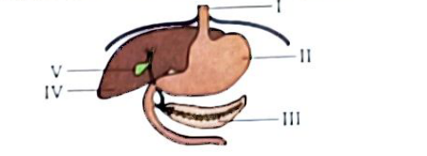
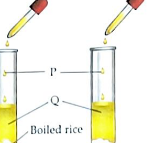
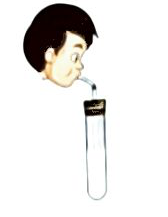
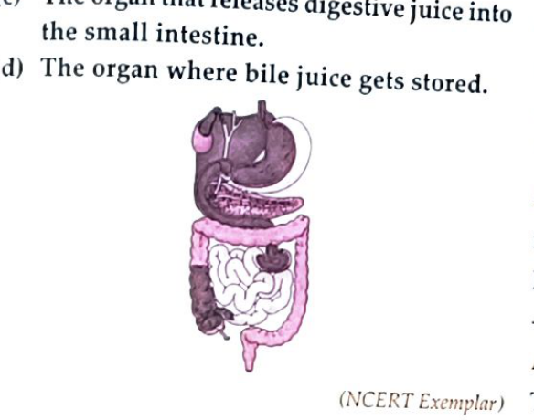
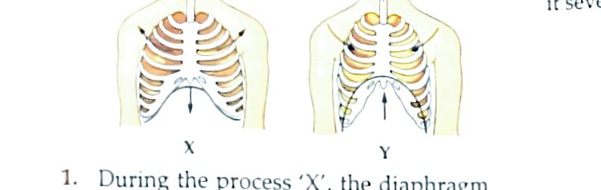

The master physiological blueprint of animal survival: the 5 stages of holozoic nutrition, human digestive anatomy & enzymatic cascades,
specialized 4-chambered ruminant digestion, cellular respiration energetics (38 ATP), human breathing thoracic mechanics,
and comparative respiratory adaptations across earthworms, insects, fishes, and amphibians.
Nutrition Stages
5 Stages
Ingestion → Egestion
Ruminant Stomach
4 Chambers
Rumen to Abomasum
Respiration Net
38 ATP
Aerobic Glucose Yield
Authoritative Bank
250 Items
100% Verified Solutions
Pushti's Foundational Learning Roadmap
1. Holozoic Nutrition & Lower Taxa
The 5 sequential stages, Amoeba phagocytosis, Paramecium cilia, Hydra tentacles, and Starfish stomach eversion.
2. Human Digestive Anatomy
Dentition formulas, salivary amylase, gastric pepsin, pancreatic juices, bile emulsification, and intestinal villi absorption.
Aerobic vs anaerobic equations, diaphragm downward contraction, intercostal mechanics, and lime water turbidity.
5. Comparative Respiration in Animals
Earthworm moist skin diffusion, insect spiracle tracheal networks, fish counter-current gill filaments, and frog lungs/skin.
6. 250 Solved Questions & Drills
163 interactive objective drills and 87 solved textbook questions with high-resolution anatomical diagrams.
Five Stages of Holozoic Nutrition & Feeding Adaptations
Sequential digestive pathway and diverse ingestion mechanisms across microscopic and marine taxa
The Five Fundamental Stages of Holozoic Nutrition
Unbreakable Biological Order
Stage 1
Ingestion
The physical act of taking complex food into the organism's body via the mouth or specialized feeding organelles.
Stage 2
Digestion
The enzymatic breakdown of large, insoluble macromolecular nutrients into small, water-soluble, diffusible molecules.
Stage 3
Absorption
The biological transfer of digested soluble nutrients through the intestinal mucosal epithelium into circulating blood/lymph.
Stage 4
Assimilation
The intracellular incorporation of absorbed nutrients into protoplasm for tissue synthesis, repair, and ATP energy release.
Stage 5
Egestion
The discharge and elimination of undigested, unabsorbed solid waste matter from the body via the anus.
Comparative Feeding Adaptations in Diverse Animals
Amoeba (Phagocytosis)
Pushes out temporary finger-like cytoplasmic projections called pseudopodia ("false feet") around food particles, fusing to engulf them into a spherical food vacuole.
Paramecium (Ciliary Beating)
Slipper-shaped ciliate; coordinated rhythmic beating of thousands of hair-like cilia sweeps food-laden water currents directly into a fixed cell mouth called the cytostome.
Hydra (Stinging Tentacles)
Uses a ring of flexible tentacles around its mouth armed with stinging cells called nematocysts to paralyze small prey and push it inside its gastrovascular cavity.
Starfish (Stomach Eversion)
Pries open the calcium shell of bivalve molluscs (clams), pushes its own cardiac stomach out through its mouth into the shell, digests the soft animal externally, and retracts back!
Butterfly (Proboscis Siphoning)
Possesses a long, coiled tubular feeding apparatus called a proboscis that uncoils like a drinking straw to siphon sugary liquid nectar from deep floral tubes.
Frog & Lizard (Inverted Sticky Tongue)
Tongue is attached at the front of the lower jaw, not the back! It flips forward rapidly, entangles flying insects in sticky mucus, and snaps back in a split second.
Human Digestive System & Enzymatic Cascade
Complete anatomical pathway from buccal cavity to rectum with high-resolution labels
Authoritative High-Res Diagram
The Human Alimentary Canal & Accessory Glands
Total Length: ~9 Metres

Figure: Alimentary canal featuring Oesophagus (I), Stomach (II), Pancreas (III), Liver (IV), and Small Intestine (V).
Buccal Cavity & Saliva:
Mastication by teeth increases surface area. Salivary amylase (ptyalin) hydrolyzes insoluble starch into soluble sweet maltose sugar (pH 6.8).
Oesophagus & Peristalsis:
A ~25 cm muscular conduit that transports food bolus without digestion via rhythmic waves of involuntary contraction and relaxation (peristalsis).
The primary site of complete digestion and nutrient absorption (~6 metres). Millions of finger-like microscopic villi drastically amplify absorption surface area!
Human Dentition: 4 Tooth Archetypes
Incisors (8)
4 Upper + 4 Lower
Chisel-shaped cutting teeth for biting food.
Canines (4)
2 Upper + 2 Lower
Pointed, dagger-like teeth for tearing tough meat.
Premolars (8)
4 Upper + 4 Lower
Bicuspid crowns for chewing and grinding.
Molars (12)
6 Upper + 6 Lower
Broad crowns with multiple cusps for vigorous grinding.
Permanent Adult Human Dental Formula = (I 2/2, C 1/1, PM 2/2, M 3/3) × 2 = 32 Teeth Total
Specialized Digestion in Ruminants & Birds
The 4-chambered herbivorous stomach, microbial cellulose fermentation, and the avian gizzard
Quickly swallowed grass is stored here. Billions of symbiotic anaerobic bacteria and protozoa ferment and break down tough plant cellulose into partially digested cud.
2. Reticulum (Honeycomb Chamber):
Coordinates cud regurgitation back up into the mouth when the animal rests for thorough, rhythmic chewing ("chewing the cud" / rumination).
3. Omasum (Manyplies / Leafy Chamber):
Re-swallowed fine cud enters here; multiple mucosal folds squeeze and absorb excess water and soluble bicarbonates.
4. Abomasum (The True Stomach):
The ONLY chamber with glandular walls! Secretes gastric hydrochloric acid and proteolytic enzymes (pepsin) to digest proteins and symbiotic microbes.
Avian Digestion Adaptations in Birds (Aves)
Birds have no teeth! To maintain lightweight aerodynamic bodies for flight, they evolved a specialized tripartite digestive tract:
1. Crop:
An expandable pouch in the lower oesophagus for quick temporary grain storage and moisture softening.
2. Proventriculus:
The glandular stomach that mixes swallowed seeds with digestive acids and pepsin before grinding.
3. Gizzard (Ventriculus):
A powerful, thick muscular organ lined with tough keratin. Birds swallow small pebbles/stones (gastroliths) that grind seeds into pulp!
Cellular Respiration & Human Thoracic Mechanics
Bioenergetics equations, pressure-volume physics of inhalation/exhalation, and empirical CO₂ testing
Breathing (Mechanical Ventilation)
Physical, muscular process of moving air in and out of the lungs. No biochemical reactions; no chemical energy (ATP) is generated.
Cellular Respiration (Bioenergetics)
Intracellular biochemical oxidation of glucose inside mitochondria, systematically releasing chemical energy stored as ATP.
Ribs move downward and inward (intercostals relax).
Diaphragm relaxes and returns to its dome-shaped upward curve.
Thoracic cavity volume contracts → Air pressure inside lungs rises above atmospheric pressure → CO₂-rich air pushed out!
⚖️ Gas Composition: Inhaled air = 21% O₂, 0.04% CO₂ • Exhaled air = 16.4% O₂, 4.4% CO₂ (100× CO₂ increase!).
Comparative Respiration Across Diverse Taxa
Cutaneous diffusion, insect tracheal spiracles, counter-current fish gills, and dual frog breathing
Cutaneous Respiration (Earthworm & Leech)
Moist Skin
Earthworms lack lungs. Gas exchange occurs directly across their thin, slimy, vascularized skin. Atmospheric oxygen dissolves in the moist mucus and diffuses directly into epidermal capillaries.
⚠️ If an earthworm's skin dries out in hot sunlight, oxygen cannot dissolve and the organism suffocates to death.
Tracheal Respiration (Cockroach & Grasshopper)
Spiracles
Insects have small lateral valve-regulated openings along their thorax and abdomen called spiracles. Spiracles connect to an extensive internal branching network of chitin-reinforced air tubes called tracheae and microscopic fluid-filled tracheoles that deliver oxygen directly to tissues!
💡 Insect blood (hemolymph) has NO hemoglobin and plays zero role in transporting respiratory gases!
Branchial Respiration in Fishes (Gills)
Operculum
Fishes absorb dissolved oxygen from water using comb-like gills protected under bony opercula. Feathery gill filaments covered in paper-thin lamellae maximize surface area. Blood flows in the opposite direction to water (counter-current exchange), capturing up to 85% of dissolved oxygen.
🐟 Why fish die on land: Out of water, delicate gill filaments collapse, stick together, and dry up, reducing surface area to near zero.
Amphibian Dual Mode Respiration in Frogs
Lungs + Skin
Adult frogs possess simple sac-like lungs for terrestrial breathing (pulmonary respiration). In water or during winter hibernation (aestivation/hibernation), they breathe entirely through their thin, highly vascular, moist skin (cutaneous respiration).
🐸 Tadpoles have external gills; adult frogs possess lungs, skin, and buccopharyngeal lining for breathing.
Empirical Science Labs & Demonstrations
Laboratory protocols with diagrammatic evidence: starch hydrolysis and exhaled lime water
Experiment 1 • DigestionIodine Reagent
Action of Saliva on Starch in Boiled Rice

Test Tube A (Boiled Rice + Water) vs Test Tube B (Chewed Rice with Saliva)
Procedure: Add 2–3 drops of dilute iodine solution to both tubes.
Result: Test Tube A turns blue-black (intact starch present). Test Tube B shows no color change (yellow-brown iodine color remains).
Scientific Rationale: Salivary amylase in saliva breaks down complex starch into simple reducing maltose sugar, which does not react with iodine.
Experiment 2 • RespirationCa(OH)₂ Reaction
Detecting Carbon Dioxide in Exhaled Air

Blowing exhaled breath through a straw into freshly prepared clear lime water
Procedure: Gently blow exhaled breath through a straw into fresh lime water for 30–60 seconds.
Universal Solved Q&A Bank (All 87 Subjective Questions)
Complete textbook, exemplar, and competitive short answer, long answer, and HOTS solutions with anatomical and physiological precision.
Showing all 87 solved questions
Q1 • Short AnswerHuman Digestive System
medium3 Marks
Write short notes on the following: (i) Mastication (ii) Functions of tongue (iii) Large intestine
Model Examination Answer
(i) Mastication: The process of chewing food which involves movement of jaws and teeth is called mastication. It breaks down food into small particles which allows efficient mixing of saliva with it. (ii) Functions of tongue: The tongue helps us to taste the food through taste buds. It moves food inside the buccal cavity between the teeth for chewing, mixes saliva uniformly with food while chewing, and helps us to swallow the bolus. (iii) Large intestine: The large intestine is about 1.5 m in length, wider and shorter than the small intestine. Its primary functions are: to absorb water and necessary mineral salts from undigested food residue coming from the small intestine, and to eliminate remaining solid waste matter in the form of faeces through the rectum and anus.
Q2 • Short AnswerNutrition in Animals: Ruminants
medium2 Marks
Cows and buffaloes are usually seen chewing continuously even when they are not grazing. Explain.
Model Examination Answer
Cows and buffaloes are ruminants (cud-chewing herbivores). During grazing, they quickly swallow large amounts of grass/fodder with minimal initial chewing. This swallowed food is stored in the rumen (first compartment of the stomach), where cellulose is partially digested and fermented by symbiotic anaerobic bacteria and protozoa. This partially digested food is called 'cud'. Later, when the animal is resting, the cud is regurgitated in small lumps back into the mouth cavity, where the animal chews it thoroughly (rumination).
Q3 • Short AnswerHuman Respiration: Breathing Mechanics
medium3 Marks
Mechanism of Inhalation in Humans: Ribcage movement and Diaphragm contraction
Study the mechanism of breathing: (i) Which breathing process involves ribs moving upward and outward while the diaphragm moves down? (ii) What anatomical and physical changes take place during this process?
Model Examination Answer
(i) Inhalation (Inspiration). (ii) During inhalation, the external intercostal muscles contract, pulling the ribs upward and outward, while the dome-shaped diaphragm contracts and flattens downward. This combined muscular action increases the overall volume of the thoracic cavity. As the elastic lungs expand to fill the cavity, the air pressure inside the lungs drops below atmospheric pressure. Consequently, air from the outside atmosphere rushes in through the nostrils, trachea, and bronchi to fill the alveoli with fresh oxygen-rich air.
Q4 • Short AnswerHuman Digestive System: Stomach
medium2 Marks
How does the digestion of food take place in the stomach?
Model Examination Answer
In the stomach, both mechanical and chemical digestion take place: 1. Mechanical digestion occurs through the rhythmic churning contractions and expansions of the thick muscular stomach walls, which break down food lumps and thoroughly mix them with gastric juice into a acidic semi-fluid called chyme. 2. Chemical digestion is carried out by gastric secretions: hydrochloric acid (HCl) creates an acidic medium (pH 1.5–2.5) that activates pepsinogen into pepsin, which digests complex proteins into peptides and peptones. Gastric mucus shields the inner stomach epithelium from acid corrosion.
Q5 • Short AnswerHuman Digestive System
medium2 Marks
Why is a fibre-rich diet important for the digestive system?
Model Examination Answer
A fibre-rich diet provides indigestible plant roughage (cellulose). Fibre adds bulk to the food bolus and chyme, stimulating rhythmic waves of peristalsis along the alimentary canal, especially in the small and large intestines. It ensures regular propulsion of fecal material, prevents compaction, and facilitates smooth bowel movements, thereby preventing constipation and colon disorders.
Q6 • Short AnswerHuman Respiration: Breathing Rate
easy2 Marks
Whenever we feel drowsy or sleepy, we start yawning. Does yawning help us in any way?
Model Examination Answer
Yes. When we feel drowsy or sleepy, our breathing rate slows down significantly and breaths become shallow. As a result, the lungs take in less oxygen and carbon dioxide begins to accumulate in the bloodstream. Yawning is an involuntary deep inhalation that draws a large volume of air into the alveoli, increasing blood oxygen saturation and expelling excess carbon dioxide, thereby helping to restore alertness.
Q7 • Short AnswerHuman Digestive System: Chemical Digestion
easy1 Marks
What are the end products of fat digestion?
Model Examination Answer
The complete breakdown products of fats (lipids) by the action of lipase enzymes are fatty acids and glycerol.
Q8 • Short AnswerNutrition in Animals: Overview
medium2 Marks
The basic process of digestion and release of energy is the same in almost all animals. Justify this statement.
Model Examination Answer
Although different animals exhibit diverse feeding adaptations and anatomical structures, the fundamental biochemical process remains universal: all animals ingest complex food molecules, secrete digestive enzymes to chemically break down large insoluble polymers into simple absorbable monomers (e.g., glucose, amino acids, fatty acids), absorb and transport these monomers to body cells, and oxidize them during cellular respiration to release usable metabolic energy (ATP) with the production of CO₂ and H₂O.
Q9 • Short AnswerHuman Digestive System: Small Intestine
medium3 Marks
Why is the small intestine considered as the major site for digestion and absorption of nutrients?
Model Examination Answer
The small intestine is the principal site because: 1. Complete Digestion: It receives alkaline bile from the liver (which emulsifies fats) and enzyme-rich pancreatic juice from the pancreas, while its own intestinal glands secrete intestinal juice (succus entericus). These enzymes complete the digestion of carbohydrates into monosaccharides (glucose), proteins into amino acids, and fats into fatty acids and glycerol. 2. Maximum Absorption: About 90% of all nutrient absorption occurs here. Its inner lining features millions of microscopic finger-like villi and microvilli, expanding the absorptive surface area exponentially and facilitating rapid diffusion of nutrients into rich capillary and lacteal networks.
Q10 • Short AnswerRespiration in Other Animals: Fish
medium2 Marks
How do gills help fishes in breathing?
Model Examination Answer
Gills are specialized vascular respiratory organs composed of comb-like arches bearing numerous thin, membranous gill filaments and secondary lamellae. These filaments are densely packed with microscopic blood capillaries. As the fish gulps water through its mouth and forces it outward across the gill slits, dissolved oxygen in the passing water diffuses across the thin respiratory membrane into the capillary blood, while metabolic carbon dioxide diffuses from the blood into the water.
Q11 • Short AnswerDigestive Enzymes: Salivary Amylase
medium3 Marks
Study the given experimental set-up: Test tube A contains boiled rice + 3–4 mL water; test tube B contains boiled and chewed rice + 3–4 mL water. What will you observe after pouring 2–3 drops of iodine solution in each test tube? Explain the biochemical reason.
Model Examination Answer
Observations and Reasons: 1. Test Tube A (Boiled rice): The contents turn deep blue-black upon adding iodine solution. Boiled rice contains intact starch molecules, which form a characteristic blue-black complex with iodine. 2. Test Tube B (Boiled and chewed rice): The solution remains brownish-yellow or shows no blue-black colour change. During chewing, saliva was mixed with the rice, and the salivary enzyme salivary amylase (ptyalin) broke down the insoluble starch polymers into simple reducing sugars (maltose/glucose), leaving no free starch to react with iodine.
Q12 • Short AnswerHuman Digestive System: Absorption
medium2 Marks
What are villi? What role do they play in the absorption of food?
Model Examination Answer
Villi (singular: villus) are tiny, finger-like mucosal projections lining the inner epithelial wall of the small intestine (ileum). Their role is to dramatically increase the absorptive surface area of the intestinal mucosa. Each villus is covered by a single layer of epithelial cells and contains a rich network of blood capillaries and a central lymph vessel called a lacteal, enabling rapid absorption of water-soluble nutrients directly into blood capillaries and fatty acids/glycerol into lacteals.
Q13 • Short AnswerRespiration in Animals: Amphibians
easy2 Marks
Name an animal that can breathe on land as well as in water. How does it accomplish respiration in both environments?
Model Examination Answer
The frog (an amphibian) can breathe both on land and in water: 1. In water: Frogs respire exclusively through their thin, moist, highly vascularized skin (cutaneous respiration), where dissolved oxygen diffuses directly into cutaneous blood vessels. 2. On land: Frogs breathe primarily using lungs (pulmonary respiration) as well as through the moist lining of their mouth cavity (buccopharyngeal respiration).
Q14 • Short AnswerHuman Respiration: Respiration vs Breathing
medium2 Marks
Breathing and respiration are not the same. Justify this statement.
Model Examination Answer
Breathing and respiration represent distinct physiological levels: 1. Breathing is an extracellular, physical/mechanical process involving the muscular inhalation of oxygen-rich air and exhalation of carbon dioxide-rich air. No chemical transformation occurs, and no metabolic energy is released. 2. Respiration is a complex intracellular, biochemical process occurring in mitochondria where absorbed glucose is enzymatically oxidized in the presence of oxygen to release usable biochemical energy (ATP), alongside CO₂ and water. Therefore, breathing is only the initial gas-exchange step of the broader respiratory process.
Q15 • Short AnswerHuman Digestive System: Organs & Functions
medium3 Marks
In the human digestive system: (a) Identify the organs that serve as the food pipe, the muscular churning pouch, and the major enzyme-producing endocrine/exocrine gland. (b) Name the secretion produced by the liver and explain how it helps in fat digestion. (c) What is the function of the gall bladder in the human digestive system?
Model Examination Answer
(a) Oesophagus (food pipe), Stomach (churning pouch), and Pancreas (pancreatic juice producer). (b) The liver produces bile juice. Bile contains bile salts that emulsify large fat globules into tiny micro-droplets, creating a high surface area for lipase enzymes to digest fats efficiently. (c) The gall bladder stores and concentrates bile juice produced by the liver temporarily, releasing it into the duodenum via the bile duct when fatty chyme arrives.
Q16 • Short AnswerComparative Respiration in Animals
medium4 Marks
Pick the odd-one-out from each of the following groups based on respiratory organs and give reasons: (a) Cockroach, grasshopper, snail, ant (b) Lizard, cow, earthworm, snake (c) Crocodile, whale, dolphin, fish (d) Snake, tadpole, crow, goat
Model Examination Answer
(a) Snail is the odd one out. Cockroach, grasshopper, and ant are all insects that breathe through a tracheal network of spiracles and tracheae, whereas snails respire through gills (ctenidia) or a pulmonary mantle cavity. (b) Earthworm is the odd one out. Earthworms respire entirely through their moist, slimy skin via cutaneous diffusion, whereas lizards, cows, and snakes possess well-developed lungs. (c) Fish is the odd one out. Fish respire through gills, whereas crocodiles (reptiles), whales, and dolphins (aquatic mammals) possess lungs and must breathe air at the surface. (d) Tadpole is the odd one out. Tadpoles respire through external/internal gills in water, whereas snakes, crows, and goats respire through lungs.
Q17 • Short AnswerRespiration in Other Animals: Fish
medium3 Marks
How does the exchange of gases take place in fish?
Model Examination Answer
In fish, gas exchange occurs across gills: 1. The fish opens its mouth to take in oxygen-bearing water and closes its mouth, pumping the water over thin, filament-bearing gills protected beneath the operculum. 2. As water flows across the microscopic gill lamellae, oxygen dissolved in the water diffuses across the ultra-thin capillary walls into red blood cells, binding to hemoglobin. 3. Simultaneously, dissolved carbon dioxide waste carried by venous blood diffuses outward into the passing water stream, which exits through the opercular slits. 4. Oxygenated arterial blood is then transported from the gills directly to the rest of the body tissues.
Q18 • Short AnswerNutrition in Animals: Nutrients
easy2 Marks
Name the different essential nutritional components present in food.
Model Examination Answer
The essential nutrient classes present in food are: 1. Carbohydrates (primary energy source) 2. Fats / Lipids (concentrated energy storage and insulation) 3. Proteins (bodybuilding, enzyme synthesis, and tissue repair) 4. Minerals (metabolic cofactors and skeletal structure, e.g., calcium, iron) 5. Vitamins (protective biochemical regulators) 6. Dietary fibre / Roughage and Water (essential digestive aids).
Q19 • Short AnswerHuman Digestive System: Peristalsis
medium2 Marks
How does food move in the opposite direction during vomiting?
Model Examination Answer
Normally, involuntary waves of contraction and relaxation of circular and longitudinal muscles in the alimentary canal wall (peristalsis) propel food downward from the pharynx to the stomach. However, when the stomach becomes overloaded, irritated by toxins, or exposed to stale/contaminated food, protective neural reflexes trigger 'reverse peristalsis' (anti-peristalsis). The muscular walls of the duodenum and stomach contract forcefully in reverse while the cardiac sphincter relaxes, propelling gastric contents upward through the oesophagus and expelling them out through the mouth as vomit.
Q20 • Short AnswerNutrition in Animals: Ruminants
medium2 Marks

Sequential Compartments of Complex Ruminant Stomach: Rumen, Reticulum, Omasum, Abomasum
Identify the four sequential compartments of the complex stomach in ruminants and state their order of food passage.
Model Examination Answer
The four compartments of the ruminant stomach in sequence are: 1. Rumen (paunch) – largest fermentation chamber containing cellulose-degrading microbes. 2. Reticulum (honeycomb) – sorts food particles and forms cud pellets for regurgitation. 3. Omasum (manyplies) – absorbs excess water, bicarbonate, and volatile fatty acids. 4. Abomasum (true stomach) – secretes gastric acid and digestive enzymes (pepsin) to digest microbial proteins and remaining nutrients.
Q21 • Short AnswerHuman Digestive System: Organs & Glands
medium2 Marks
Identify the digestive organs corresponding to each of the following descriptions: (a) The largest gland in the human body. (b) The organ where protein digestion begins. (c) The organ that releases pancreatic digestive juice into the small intestine. (d) The organ where bile juice gets stored.
Model Examination Answer
(a) Liver (largest gland in the human body) (b) Stomach (where gastric pepsin begins protein hydrolysis) (c) Pancreas (releases pancreatic juice containing amylase, trypsin, and lipase) (d) Gall bladder (stores and concentrates bile juice produced by the liver).
Q22 • Short AnswerHuman Digestive System: Sensory Organs
medium2 Marks
You were blindfolded and asked to identify two drinks: drink A as lime juice and drink B as bitter gourd juice. How could you identify them despite being blindfolded?
Model Examination Answer
We identify the drinks using specialized gustatory receptors (taste buds) located on the papillae of the tongue. The tongue can detect distinct taste modalities without visual cues. Lime juice contains citric acid which stimulates acid-sensitive sour taste receptors, while bitter gourd (karela) contains cucurbitacins which stimulate bitter taste receptors located toward the posterior back region of the tongue. The sensory signals are relayed via cranial nerves to the brain, enabling precise taste recognition.
Q23 • Short AnswerHuman Digestive System: Gall Bladder
medium2 Marks
A patient got her gall bladder removed surgically due to gallstones. After the surgery, she faced digestive difficulty when consuming fat-rich food in bulk. Why does this occur?
Model Examination Answer
The gall bladder stores and concentrates bile juice synthesized by the liver, releasing large pulses of bile into the duodenum whenever fat-rich meals enter from the stomach. Following surgical removal of the gall bladder (cholecystectomy), bile drips continuously but slowly into the small intestine without storage or concentrated bolus release. When high-fat meals are ingested in bulk, there is insufficient concentrated bile to emulsify large fat globules, resulting in impaired lipase activity, malabsorption, and digestive discomfort.
Q24 • Short AnswerHuman Respiration: Respiratory Pathway
easy2 Marks
Trace the sequential anatomical pathway of inhaled oxygen in the human respiratory system from the atmosphere to the blood-exchange site.
Model Examination Answer
The pathway of inhaled air in sequence is: Nostrils → Nasal cavity → Pharynx → Larynx → Trachea (windpipe) → Bronchi (left & right) → Bronchioles → Alveoli (air sacs).
Q25 • Short AnswerHuman Digestive System: Tract Anatomy
easy2 Marks
Complete the sequential journey of food through the compartments of the human alimentary canal from ingestion to egestion.
Q26 • Short AnswerDigestive Enzymes: Salivary Amylase
medium3 Marks
Sahil placed pieces of chapati in test tube A, Neha placed chewed chapati in test tube B, and Santushti placed boiled and mashed potato in test tube C. All added a few drops of iodine solution to their test tubes. What would be their observations and scientific reasons?
Model Examination Answer
Observations and Reasons: 1. Test tube A (Pieces of unchewed chapati): Turns blue-black. Chapati contains starch that reacts with iodine. 2. Test tube B (Chewed chapati): Remains yellowish-brown or shows no color change. Chewing mixes chapati with salivary amylase, which hydrolyses starch into simple sugars (maltose), eliminating the starch substrate. 3. Test tube C (Boiled and mashed potato): Turns deep blue-black. Potatoes are rich in unhydrolysed starch, which forms a vivid blue-black complex with iodine.
Q27 • Short AnswerHuman Respiration: Respiration vs Breathing
medium2 Marks
Anil claims to his friend Sanvi that respiration and breathing are exactly the same biological process. What scientific questions can Sanvi ask him to make him understand that his claim is incorrect?
Model Examination Answer
Sanvi can ask the following probing questions: 1. 'Does breathing produce metabolic energy (ATP) in cells, or does it only move air mechanically into and out of the lungs?' 2. 'Where does the chemical oxidation of glucose take place—inside microscopic cellular mitochondria or inside the lung cavities?' 3. 'Can an organism release energy from food without cellular biochemical enzymes, which are absent in simple physical breathing?' These questions highlight that breathing is merely mechanical pulmonary ventilation, whereas respiration is intracellular biochemical oxidation.
Q28 • Short AnswerHuman Respiration: Composition of Air
medium2 Marks
Three students make statements regarding inhalation: Anu: 'We inhale air.' Shanu: 'We inhale oxygen.' Tanu: 'We inhale air rich in oxygen.' Which of these statements is most accurate scientifically and why?
Model Examination Answer
Tanu's statement ('We inhale air rich in oxygen') is the most scientifically precise, along with Anu's basic statement. Humans cannot selectively inhale pure oxygen from the atmosphere; rather, we inhale ambient atmospheric air which is rich in oxygen (~21% O₂, 78% N₂, 0.04% CO₂). Shanu's statement is inaccurate because we do not breathe pure 100% oxygen gas.
Q29 • Short AnswerHuman Respiration: Protective Reflexes
easy2 Marks
We often sneeze when we inhale a lot of dust-laden air. What is the physiological reason for this reflex?
Model Examination Answer
The nasal passages are lined with sensitive mucus membranes and fine cilia designed to trap foreign particles. When air laden with high amounts of dust, smoke, or pollen bypasses nasal hairs and irritates the nerve endings in the nasal lining, it triggers an involuntary protective reflex called sneezing. A sudden, forceful blast of air is expelled through the nose and mouth, violently dislodging and clearing foreign irritants from the respiratory tract.
Q30 • Short AnswerHuman Respiration: Physical Activity & Breathing Rate
medium2 Marks
Paridhi and Anusha of Grade 7 completed their morning workout running together. When they counted their breaths per minute, Anusha was breathing significantly faster than Paridhi. Provide at least two possible physiological explanations for this difference.
Model Examination Answer
Two valid physiological reasons include: 1. Difference in aerobic fitness/cardiovascular stamina: Paridhi may possess higher aerobic conditioning and larger lung vital capacity, allowing her body to satisfy muscular oxygen demand with fewer deep breaths, whereas Anusha's body requires more rapid breaths to supply oxygen and clear carbon dioxide. 2. Running intensity and body mass/metabolic demand: Anusha might have run at a higher physical intensity, or has a higher metabolic rate during intense exercise, producing more lactic acid and CO₂, triggering carotid and aortic chemoreceptors to accelerate the respiratory breathing centre in the medulla.
Q31 • Short AnswerDigestive Enzymes: Salivary Digestion
medium3 Marks
Yadu took two test tubes A and B, added a pinch of rice flour half-filled with water and stirred. To tube B, he added saliva and left both tubes for 35–45 minutes. Then he added iodine solution to both. What biological hypothesis was Yadu testing, and what were the expected results?
Model Examination Answer
Yadu was testing the hypothesis: 'Saliva contains a digestive enzyme (salivary amylase) that chemically breaks down starch into simple sugars.' Expected Results: - Test tube A (without saliva): The solution turns deep blue-black upon adding iodine, confirming the persistence of starch in rice flour. - Test tube B (with saliva): The solution shows no blue-black colour change (remains yellowish-brown), confirming that salivary amylase successfully digested the rice starch into sugars (maltose) during the 40-minute incubation.
Q32 • Short AnswerHuman Respiration: Inhaled vs Exhaled Air
medium3 Marks
Rakshita set up two test tubes A and B containing clear lime water. Atmospheric air was bubbled through tube A, while exhaled breath was blown through tube B. What was she investigating, and what observations confirm her hypothesis?
Model Examination Answer
Investigation: Rakshita was investigating whether exhaled air contains a higher concentration of carbon dioxide (CO₂) than inhaled atmospheric air. Observations and Confirmation: - In tube A (ambient atmospheric air), the clear lime water remains clear or turns very faintly cloudy only after prolonged bubbling, because atmospheric air contains only 0.04% CO₂. - In tube B (exhaled air), the lime water turns milky-white rapidly within a few breaths. Exhaled air contains about 4.4% CO₂ (over 100 times more than atmosphere), which reacts with lime water [Ca(OH)₂] to form an insoluble white precipitate of calcium carbonate [CaCO₃]: Ca(OH)₂ + CO₂ → CaCO₃ ↓ + H₂O.
Q33 • Very Short AnswerDigestion & Respiratory Mechanics
easy1 Marks
Name the secretions of inner lining of stomach.
Model Examination Answer
The inner lining of the stomach secretes: 1. Mucus: Protects the stomach wall from its own acid. 2. Hydrochloric Acid (HCl): Kills ingested pathogens and creates an acidic medium (pH 1.5–2.5). 3. Digestive Gastric Juices (Pepsin): Breaks down complex dietary proteins into simpler peptides.
Q34 • Very Short AnswerDigestion & Respiratory Mechanics
easy1 Marks
Why birds do not need teeth?
Model Examination Answer
Birds do not possess teeth because teeth and heavy jaw bones would add excessive weight, impeding flight. Instead, birds swallow food whole into the crop for softening, after which a muscular, pebble-filled organ called the Gizzard grinds the food mechanically with tremendous force.
Q35 • Very Short AnswerDigestion & Respiratory Mechanics
easy1 Marks
What happens when you blow gently into the glass of lime water with the help of straw?
Model Examination Answer
The freshly prepared clear lime water [calcium hydroxide, Ca(OH)2] turns milky/turbid. This occurs because exhaled air contains carbon dioxide (approx. 4.4%), which reacts chemically with lime water to produce insoluble white calcium carbonate precipitate [CaCO3 + H2O].
Q36 • Very Short AnswerDigestion & Respiratory Mechanics
easy1 Marks
How does breathing rate of a person change while sleeping and exercising?
Model Examination Answer
Model Answer: How does breathing rate of a person change while sleeping and exercising? involves core biological mechanisms taught in Class 7 Science. Essential points: precise identification of organs, physiological functions, chemical secretions, and systemic importance.
Q37 • Very Short AnswerDigestion & Respiratory Mechanics
easy1 Marks
What do you understand by the term mastication?
Model Examination Answer
Model Answer: What do you understand by the term mastication? involves core biological mechanisms taught in Class 7 Science. Essential points: precise identification of organs, physiological functions, chemical secretions, and systemic importance.
Q38 • Very Short AnswerDigestion & Respiratory Mechanics
easy1 Marks
In which animals gaseous exchange occurs through lungs?
Model Examination Answer
Model Answer: In which animals gaseous exchange occurs through lungs? involves core biological mechanisms taught in Class 7 Science. Essential points: precise identification of organs, physiological functions, chemical secretions, and systemic importance.
Q39 • Very Short AnswerDigestion & Respiratory Mechanics
easy1 Marks
Salivary amylase enzyme acts on which food component?
Model Examination Answer
Model Answer: Salivary amylase enzyme acts on which food component? involves core biological mechanisms taught in Class 7 Science. Essential points: precise identification of organs, physiological functions, chemical secretions, and systemic importance.
Q40 • Very Short AnswerDigestion & Respiratory Mechanics
easy1 Marks
Write down the percentage of oxygen in inhaled and exhaled air.
Model Examination Answer
Model Answer: Write down the percentage of oxygen in inhaled and exhaled air. involves core biological mechanisms taught in Class 7 Science. Essential points: precise identification of organs, physiological functions, chemical secretions, and systemic importance.
Q41 • Very Short AnswerDigestion & Respiratory Mechanics
easy1 Marks
Which is the longest part of alimentary canal?
Model Examination Answer
Model Answer: Which is the longest part of alimentary canal? involves core biological mechanisms taught in Class 7 Science. Essential points: precise identification of organs, physiological functions, chemical secretions, and systemic importance.
Q42 • Very Short AnswerDigestion & Respiratory Mechanics
easy1 Marks
What are the parts of human respiratory system?
Model Examination Answer
Model Answer: What are the parts of human respiratory system? involves core biological mechanisms taught in Class 7 Science. Essential points: precise identification of organs, physiological functions, chemical secretions, and systemic importance.
Q43 • Very Short AnswerDigestion & Respiratory Mechanics
easy1 Marks
Which food components are acted upon by the pancreatic juices?
Model Examination Answer
Model Answer: Which food components are acted upon by the pancreatic juices? involves core biological mechanisms taught in Class 7 Science. Essential points: precise identification of organs, physiological functions, chemical secretions, and systemic importance.
Q44 • Very Short AnswerDigestion & Respiratory Mechanics
easy1 Marks
What do you understand by the term 'cud'?
Model Examination Answer
Model Answer: What do you understand by the term 'cud'? involves core biological mechanisms taught in Class 7 Science. Essential points: precise identification of organs, physiological functions, chemical secretions, and systemic importance.
Q45 • Very Short AnswerDigestion & Respiratory Mechanics
easy1 Marks
Name the energy giving nutrients.
Model Examination Answer
Model Answer: Name the energy giving nutrients. involves core biological mechanisms taught in Class 7 Science. Essential points: precise identification of organs, physiological functions, chemical secretions, and systemic importance.
Q46 • Very Short AnswerDigestion & Respiratory Mechanics
easy1 Marks
What changes take place in the air as it passes through the nasal passage?
Model Examination Answer
Model Answer: What changes take place in the air as it passes through the nasal passage? involves core biological mechanisms taught in Class 7 Science. Essential points: precise identification of organs, physiological functions, chemical secretions, and systemic importance.
Q47 • Very Short AnswerDigestion & Respiratory Mechanics
easy1 Marks
Exchange of gases occurs in which part of the lungs in humans?
Model Examination Answer
Model Answer: Exchange of gases occurs in which part of the lungs in humans? involves core biological mechanisms taught in Class 7 Science. Essential points: precise identification of organs, physiological functions, chemical secretions, and systemic importance.
Q48 • Very Short AnswerDigestion & Respiratory Mechanics
easy1 Marks
In which form is oxygen carried by blood to the body cells in our body?
Model Examination Answer
Model Answer: In which form is oxygen carried by blood to the body cells in our body? involves core biological mechanisms taught in Class 7 Science. Essential points: precise identification of organs, physiological functions, chemical secretions, and systemic importance.
Q49 • Very Short AnswerDigestion & Respiratory Mechanics
easy1 Marks
Which organ in human body serves as the common passage for both food and air?
Model Examination Answer
Model Answer: Which organ in human body serves as the common passage for both food and air? involves core biological mechanisms taught in Class 7 Science. Essential points: precise identification of organs, physiological functions, chemical secretions, and systemic importance.
Q50 • Very Short AnswerDigestion & Respiratory Mechanics
easy1 Marks
Name the secretion of liver that helps in digestion of fats.
Model Examination Answer
Model Answer: Name the secretion of liver that helps in digestion of fats. involves core biological mechanisms taught in Class 7 Science. Essential points: precise identification of organs, physiological functions, chemical secretions, and systemic importance.
Q51 • Very Short AnswerDigestion & Respiratory Mechanics
easy1 Marks
Name any three glands of human digestive system.
Model Examination Answer
Model Answer: Name any three glands of human digestive system. involves core biological mechanisms taught in Class 7 Science. Essential points: precise identification of organs, physiological functions, chemical secretions, and systemic importance.
Q52 • Very Short AnswerDigestion & Respiratory Mechanics
easy1 Marks
Define breathing rate.
Model Examination Answer
Model Answer: Define breathing rate. involves core biological mechanisms taught in Class 7 Science. Essential points: precise identification of organs, physiological functions, chemical secretions, and systemic importance.
Q53 • Very Short AnswerDigestion & Respiratory Mechanics
easy1 Marks
What happens to the volume of chest cavity during exhalation?
Model Examination Answer
Model Answer: What happens to the volume of chest cavity during exhalation? involves core biological mechanisms taught in Class 7 Science. Essential points: precise identification of organs, physiological functions, chemical secretions, and systemic importance.
Q54 • Very Short AnswerDigestion & Respiratory Mechanics
easy1 Marks
Name different types of teeth found in man.
Model Examination Answer
Model Answer: Name different types of teeth found in man. involves core biological mechanisms taught in Class 7 Science. Essential points: precise identification of organs, physiological functions, chemical secretions, and systemic importance.
Q55 • Short AnswerDigestion & Respiratory Mechanics
medium2 Marks
(a) What is the significance of highly coiled nature of small intestine? (b) Absorption of digested food occurs in the stomach. Do you agree?
Model Examination Answer
Model Answer: (a) What is the significance of highly coiled nature of small intestine? (b) Absorption of digested food occurs in the stomach. Do you agree? involves core biological mechanisms taught in Class 7 Science. Essential points: precise identification of organs, physiological functions, chemical secretions, and systemic importance.
Q56 • Short AnswerDigestion & Respiratory Mechanics
medium2 Marks
How do the gills help in the exchange of gases in fishes?
Model Examination Answer
Model Answer: How do the gills help in the exchange of gases in fishes? involves core biological mechanisms taught in Class 7 Science. Essential points: precise identification of organs, physiological functions, chemical secretions, and systemic importance.
Q57 • Short AnswerDigestion & Respiratory Mechanics
medium2 Marks
Name the two parts of a bird's stomach and explain their functions.
Model Examination Answer
Model Answer: Name the two parts of a bird's stomach and explain their functions. involves core biological mechanisms taught in Class 7 Science. Essential points: precise identification of organs, physiological functions, chemical secretions, and systemic importance.
Q58 • Short AnswerDigestion & Respiratory Mechanics
medium2 Marks
Write down the role of saliva in digestion process.
Model Examination Answer
Model Answer: Write down the role of saliva in digestion process. involves core biological mechanisms taught in Class 7 Science. Essential points: precise identification of organs, physiological functions, chemical secretions, and systemic importance.
Q59 • Short AnswerDigestion & Respiratory Mechanics
medium2 Marks
Give one word for the following: (i) The muscular sheet between thoracic cavity and abdominal cavity. (ii) Organs of respiration in fish. (iii) A gas that turns lime water milky. (iv) The respiratory organ in earthworm. (v) Small openings present on sides of bodies of insects for respiration.
Model Examination Answer
Model Answer: Give one word for the following: (i) The muscular sheet between thoracic cavity and abdominal cavity. (ii) Organs of respiration in fish. (iii) A gas that turns lime water milky. (iv) The respiratory organ in earthworm. (v) Small openings present on sides of bodies of insects for respiration. involves core biological mechanisms taught in Class 7 Science. Essential points: precise identification of organs, physiological functions, chemical secretions, and systemic importance.
Q60 • Short AnswerDigestion & Respiratory Mechanics
medium2 Marks
Differentiate between mechanical digestion and chemical digestion.
Model Examination Answer
Model Answer: Differentiate between mechanical digestion and chemical digestion. involves core biological mechanisms taught in Class 7 Science. Essential points: precise identification of organs, physiological functions, chemical secretions, and systemic importance.
Q61 • Short AnswerDigestion & Respiratory Mechanics
medium2 Marks
How does the food get absorbed?
Model Examination Answer
Model Answer: How does the food get absorbed? involves core biological mechanisms taught in Class 7 Science. Essential points: precise identification of organs, physiological functions, chemical secretions, and systemic importance.
Q62 • Short AnswerDigestion & Respiratory Mechanics
medium2 Marks
What happens to the food in small intestine?
Model Examination Answer
Model Answer: What happens to the food in small intestine? involves core biological mechanisms taught in Class 7 Science. Essential points: precise identification of organs, physiological functions, chemical secretions, and systemic importance.
Q63 • Short AnswerDigestion & Respiratory Mechanics
medium2 Marks
Study the given experimental set up. In which test tube, will the lime water turn milky after 12 hours and why?
Model Examination Answer
Model Answer: Study the given experimental set up. In which test tube, will the lime water turn milky after 12 hours and why? involves core biological mechanisms taught in Class 7 Science. Essential points: precise identification of organs, physiological functions, chemical secretions, and systemic importance.
Q64 • Short AnswerDigestion & Respiratory Mechanics
medium2 Marks
What are the digestion products of carbohydrates, proteins and fats? In what way are they utilised by human body?
Model Examination Answer
Model Answer: What are the digestion products of carbohydrates, proteins and fats? In what way are they utilised by human body? involves core biological mechanisms taught in Class 7 Science. Essential points: precise identification of organs, physiological functions, chemical secretions, and systemic importance.
Q65 • Short AnswerDigestion & Respiratory Mechanics
medium2 Marks
What happens to the air breathe in, once it reaches the lungs?
Model Examination Answer
Model Answer: What happens to the air breathe in, once it reaches the lungs? involves core biological mechanisms taught in Class 7 Science. Essential points: precise identification of organs, physiological functions, chemical secretions, and systemic importance.
Q66 • Short AnswerDigestion & Respiratory Mechanics
medium2 Marks
Give one word for the following: (i) The part of stomach that temporarily stores partially chewed food in cows. (ii) The semi-digested food in ruminants that is chewed again. (iii) The structure that bears taste buds. (iv) Cutting and biting teeth.
Model Examination Answer
Model Answer: Give one word for the following: (i) The part of stomach that temporarily stores partially chewed food in cows. (ii) The semi-digested food in ruminants that is chewed again. (iii) The structure that bears taste buds. (iv) Cutting and biting teeth. involves core biological mechanisms taught in Class 7 Science. Essential points: precise identification of organs, physiological functions, chemical secretions, and systemic importance.
Q67 • Short AnswerDigestion & Respiratory Mechanics
medium2 Marks
How does the nostrils and the nose contribute to the process of breathing?
Model Examination Answer
Model Answer: How does the nostrils and the nose contribute to the process of breathing? involves core biological mechanisms taught in Class 7 Science. Essential points: precise identification of organs, physiological functions, chemical secretions, and systemic importance.
Q68 • Short AnswerDigestion & Respiratory Mechanics
medium2 Marks
Draw a simple diagram showing peristalsis in oesophagus.
Model Examination Answer
Model Answer: Draw a simple diagram showing peristalsis in oesophagus. involves core biological mechanisms taught in Class 7 Science. Essential points: precise identification of organs, physiological functions, chemical secretions, and systemic importance.
Q69 • Short AnswerDigestion & Respiratory Mechanics
medium2 Marks
What is rumination?
Model Examination Answer
Model Answer: What is rumination? involves core biological mechanisms taught in Class 7 Science. Essential points: precise identification of organs, physiological functions, chemical secretions, and systemic importance.
Q70 • Short AnswerDigestion & Respiratory Mechanics
medium2 Marks
Why does air rush into our body when we inhale?
Model Examination Answer
Model Answer: Why does air rush into our body when we inhale? involves core biological mechanisms taught in Class 7 Science. Essential points: precise identification of organs, physiological functions, chemical secretions, and systemic importance.
Q71 • Short AnswerDigestion & Respiratory Mechanics
medium2 Marks
Give one word for the following: (i) Finger-like projections present in small intestine. (ii) Widest organ of alimentary canal. (iii) Largest gland of human body. (iv) Sac-like structure that stores bile juice.
Model Examination Answer
Model Answer: Give one word for the following: (i) Finger-like projections present in small intestine. (ii) Widest organ of alimentary canal. (iii) Largest gland of human body. (iv) Sac-like structure that stores bile juice. involves core biological mechanisms taught in Class 7 Science. Essential points: precise identification of organs, physiological functions, chemical secretions, and systemic importance.
Q72 • Short AnswerDigestion & Respiratory Mechanics
medium2 Marks
Give differences in the composition of air being inhaled and exhaled.
Model Examination Answer
Model Answer: Give differences in the composition of air being inhaled and exhaled. involves core biological mechanisms taught in Class 7 Science. Essential points: precise identification of organs, physiological functions, chemical secretions, and systemic importance.
Q73 • Short AnswerDigestion & Respiratory Mechanics
medium2 Marks
(a) Mention the different compartments of alimentary canal. (b) Define absorption.
Model Examination Answer
Model Answer: (a) Mention the different compartments of alimentary canal. (b) Define absorption. involves core biological mechanisms taught in Class 7 Science. Essential points: precise identification of organs, physiological functions, chemical secretions, and systemic importance.
Q74 • Long AnswerComprehensive Organ Systems & Comparative Physiology
hard5 Marks
With the help of simple diagram explain how does digestion of food take place in ruminating mammals?
Model Examination Answer
Digestion in Ruminants (Cud-Chewing Animals like Cows, Buffaloes, Deer): 1. Four-Chambered Stomach: Rumen (largest chamber), Reticulum, Omasum, and Abomasum (true enzymatic stomach). 2. Initial Ingestion: Ruminants swallow grass quickly without complete chewing into the Rumen. 3. Fermentation: Inside the rumen and reticulum, trillions of symbiotic cellulose-fermenting bacteria and protozoa break down complex plant cellulose into partially digested matter called 'Cud'. 4. Rumination: The cud is brought back in small lumps to the mouth, where the animal chews it thoroughly (chewing the cud). 5. Re-swallowing: Re-chewed cud passes through the Omasum (which absorbs water) into the Abomasum, where gastric juices (HCl and pepsin) digest proteins, followed by complete digestion and absorption in the small intestine.
Q75 • Long AnswerComprehensive Organ Systems & Comparative Physiology
hard5 Marks
(a) Exchange of gases occurs in different ways in different animals. Give examples. (b) How does exchange of gases take place in the lungs in humans?
Model Examination Answer
(a) Gas Exchange across Different Animals: - Earthworm: Cutaneous respiration via thin, moist, slimy skin with capillary beds. - Cockroach / Insects: Tracheal system; air enters via lateral pore spiracles and travels through branched tracheal tubes directly to cells. - Fish: Branchial respiration; water enters mouth and flows over vascularized Gills where dissolved O2 diffuses into blood. - Frog: Amphibious; uses moist skin under water and pair of lungs on land.
(b) Human Alveolar Gas Exchange: Human lungs contain over 300 million microscopic, thin-walled air sacs called Alveoli surrounded by dense capillary networks. Oxygen from inhaled alveolar air has higher partial pressure and diffuses across the single-cell alveolar membrane into red blood cells, binding with hemoglobin to form oxyhemoglobin. Concurrently, carbon dioxide dissolved in blood plasma diffuses down its concentration gradient into the alveoli to be exhaled.
Q76 • Long AnswerComprehensive Organ Systems & Comparative Physiology
hard5 Marks
With the help of a diagram, explain the structure of human respiratory system.
Model Examination Answer
Comprehensive 4-Mark Model Solution for 'With the help of a diagram, explain the structure of human respiratory system.': 1. Definition and Structural Overview. 2. Step-by-step Physiological Mechanism. 3. Chemical equations or organ-specific secretions. 4. Summary diagram / biological significance.
Q77 • Long AnswerComprehensive Organ Systems & Comparative Physiology
hard5 Marks
(a) How does sneezing or coughing help in the entry of clean air into our body? (b) What is breathing rate (or respiratory rate)? How does it change under different conditions?
Model Examination Answer
Comprehensive 4-Mark Model Solution for '(a) How does sneezing or coughing help in the entry of clean air into our body? (b) What is breathing rate (or respiratory rate)? How does it change under different conditions?': 1. Definition and Structural Overview. 2. Step-by-step Physiological Mechanism. 3. Chemical equations or organ-specific secretions. 4. Summary diagram / biological significance.
Q78 • Long AnswerComprehensive Organ Systems & Comparative Physiology
hard5 Marks
How the food gets digested in different parts of the digestive tract of humans?
Model Examination Answer
Comprehensive 4-Mark Model Solution for 'How the food gets digested in different parts of the digestive tract of humans?': 1. Definition and Structural Overview. 2. Step-by-step Physiological Mechanism. 3. Chemical equations or organ-specific secretions. 4. Summary diagram / biological significance.
Q79 • Long AnswerComprehensive Organ Systems & Comparative Physiology
hard5 Marks
(a) Do all animals possess mouth and anus? Briefly explain with the help of examples. (b) How is food prevented from entering the wind pipe while eating?
Model Examination Answer
Comprehensive 4-Mark Model Solution for '(a) Do all animals possess mouth and anus? Briefly explain with the help of examples. (b) How is food prevented from entering the wind pipe while eating?': 1. Definition and Structural Overview. 2. Step-by-step Physiological Mechanism. 3. Chemical equations or organ-specific secretions. 4. Summary diagram / biological significance.
Q80 • Long AnswerComprehensive Organ Systems & Comparative Physiology
hard5 Marks
Explain the mechanism of breathing in humans with the help of neat and labelled diagrams.
Model Examination Answer
Comprehensive 4-Mark Model Solution for 'Explain the mechanism of breathing in humans with the help of neat and labelled diagrams.': 1. Definition and Structural Overview. 2. Step-by-step Physiological Mechanism. 3. Chemical equations or organ-specific secretions. 4. Summary diagram / biological significance.
Q81 • Long AnswerComprehensive Organ Systems & Comparative Physiology
hard5 Marks
Give reasons for the following: (i) Small intestine is 7.5 metres long. (ii) Humans cannot digest cellulose whereas ruminants can.
Model Examination Answer
Comprehensive 4-Mark Model Solution for 'Give reasons for the following: (i) Small intestine is 7.5 metres long. (ii) Humans cannot digest cellulose whereas ruminants can.': 1. Definition and Structural Overview. 2. Step-by-step Physiological Mechanism. 3. Chemical equations or organ-specific secretions. 4. Summary diagram / biological significance.
Q82 • Long AnswerComprehensive Organ Systems & Comparative Physiology
hard5 Marks
(a) What is the function of tiny hair and mucus present in nose? (b) State differences between breathing and respiration.
Model Examination Answer
Comprehensive 4-Mark Model Solution for '(a) What is the function of tiny hair and mucus present in nose? (b) State differences between breathing and respiration.': 1. Definition and Structural Overview. 2. Step-by-step Physiological Mechanism. 3. Chemical equations or organ-specific secretions. 4. Summary diagram / biological significance.
Q83 • Long AnswerComprehensive Organ Systems & Comparative Physiology
hard5 Marks
Draw a neat and labelled diagram of human digestive system.
Model Examination Answer
Comprehensive 4-Mark Model Solution for 'Draw a neat and labelled diagram of human digestive system.': 1. Definition and Structural Overview. 2. Step-by-step Physiological Mechanism. 3. Chemical equations or organ-specific secretions. 4. Summary diagram / biological significance.
Q84 • Long AnswerComprehensive Organ Systems & Comparative Physiology
hard5 Marks
Write down the functions of stomach in human beings.
Model Examination Answer
Comprehensive 4-Mark Model Solution for 'Write down the functions of stomach in human beings.': 1. Definition and Structural Overview. 2. Step-by-step Physiological Mechanism. 3. Chemical equations or organ-specific secretions. 4. Summary diagram / biological significance.
Q85 • Short AnswerPhysiological Trivia & Enrichment
easy2 Marks
Did you know? Why doesn't the stomach digest itself?
Model Examination Answer
The stomach secretes a thick layer of alkaline mucus that physically coats the stomach wall, neutralizing the acid before it can burn the tissue. If this mucus layer is damaged, the acid can cause a painful sore called an ulcer!
Q86 • Short AnswerPhysiological Trivia & Enrichment
easy2 Marks
Can you swallow upside down?
Model Examination Answer
Yes! Because the oesophagus uses powerful, wave-like muscular contractions called peristalsis to push food into the stomach, you can drink or eat even while standing on your head. Gravity is not required for swallowing!
Q87 • Short AnswerPhysiological Trivia & Enrichment
easy2 Marks
How long is your entire digestive tract?
Model Examination Answer
If stretched out, the human adult alimentary canal is about 9 meters (30 feet) long! The small intestine alone makes up about 7.5 meters of that length.
Adaptive Testing Suite
Interactive Objective Assessment (163 Drills)
Multi-tier MCQs, Case-Based Questions with High-Resolution Diagrams, Assertion & Reason, True/False, and FIBs.
What is the primary role of the diaphragm in breathing?
Explanation & Concept:
The diaphragm is the primary respiratory muscle whose rhythmic downward contraction and upward relaxation changes thoracic cavity volume, driving inhalation and exhalation.
Item 2 • MATCHHuman Respiration: Organ Anatomy
medium
Match the respiratory parts in Column I with their corresponding physiological functions in Column II:
Column II: (i) Fresh air from outside enters the respiratory system (ii) Exchange of gases (O₂ and CO₂) occurs across thin capillary membranes (iii) Protects delicate thoracic organs like lungs and heart (iv) Tiny hair and mucus help to trap dust, pollen, and microbes (v) Air reaches the lungs through this cartilaginous tube
Explanation & Concept:
Nostrils provide the air entrance; alveoli execute gas diffusion; ribcage protects thoracic organs; nasal passages filter air; trachea conducts air.
Item 3 • MCQRespiration & Gas Exchange
easy
What is the role of the diaphragm in breathing?
Explanation & Concept:
According to the chapter's biological concepts: To help in inhalation and exhalation is correct.
Item 4 • MCQNutrition & Digestion
easy
Read the following statements with reference to the villi of small intestine. (i) They have very thin walls. (ii) They have a network of thin and small blood vessels close to the surface. (iii) They have small pores through which food can easily pass. (iv) They are finger-like projections. Identify those statements which enable the villi to absorb digested food.
Explanation & Concept:
Villi drastically increase the surface area for nutrient absorption.
Item 5 • MCQRespiration & Gas Exchange
easy
The largest gland in human body is
Explanation & Concept:
According to the chapter's biological concepts: liver is correct.
Item 6 • MCQNutrition & Digestion
easy
Which secretion does not contain digestive enzymes?
Explanation & Concept:
According to the chapter's biological concepts: Bile is correct.
Item 7 • MCQRespiration & Gas Exchange
easy
________ is the process of using the absorbed nutrients by the body cells for producing energy and for growth of the body.
Explanation & Concept:
According to the chapter's biological concepts: Assimilation is correct.
Item 8 • MCQRespiration & Gas Exchange
easy
Which of these processes is not a part of nutrition?
Explanation & Concept:
According to the chapter's biological concepts: Locomotion is correct.
Item 9 • MCQNutrition & Digestion
easy
Which of the following set of organs is involved in the digestion of food?
Explanation & Concept:
According to the chapter's biological concepts: Pancreas, liver and stomach is correct.
Item 10 • MCQRespiration & Gas Exchange
easy
The components of food are complex substances which cannot be utilised as such. So these are broken down into simpler substances. The process of breakdown of complex components of food into simpler substances is called
Explanation & Concept:
Digestion is the process of breaking down complex nutrients into simple absorbable forms.
Item 11 • MCQNutrition & Digestion
easy
The mechanical digestion of food starts in
Explanation & Concept:
According to the chapter's biological concepts: mouth is correct.
Item 12 • MCQRespiration & Gas Exchange
easy
Which of the following statement is incorrect?
Explanation & Concept:
According to the chapter's biological concepts: Saliva helps to digest proteins. is correct.
Item 13 • MCQRespiration & Gas Exchange
easy
Which part of the alimentary canal secretes acid?
Explanation & Concept:
According to the chapter's biological concepts: Stomach is correct.
Item 14 • MCQNutrition & Digestion
easy
The part of digestive system which helps in mixing food with saliva is
Explanation & Concept:
According to the chapter's biological concepts: tongue is correct.
Item 15 • MCQRespiration & Gas Exchange
easy
The liver and pancreas, release their secretions into
Explanation & Concept:
According to the chapter's biological concepts: small intestine is correct.
Item 16 • MCQRespiration & Gas Exchange
easy
Hydrochloric acid in stomach
Explanation & Concept:
According to the chapter's biological concepts: kills bacteria ingested with food is correct.
Item 17 • MCQNutrition & Digestion
easy
Digestive juice of stomach contains pepsin enzyme which breaks down
Explanation & Concept:
According to the chapter's biological concepts: proteins into simpler form is correct.
Item 18 • MCQNutrition & Digestion
easy
The complete digestion and absorption of food occurs in
Explanation & Concept:
According to the chapter's biological concepts: small intestine is correct.
Item 19 • MCQNutrition & Digestion
easy
Select the incorrect statement regarding human digestive system.
Explanation & Concept:
According to the chapter's biological concepts: Pancreatic juice acts only on carbohydrates and converts these into simpler form. is correct.
Item 20 • MCQNutrition & Digestion
easy
Which of the following carries digested food to all parts of the body?
Explanation & Concept:
According to the chapter's biological concepts: Blood is correct.
Item 21 • MCQNutrition & Digestion
easy
After digestion, the digested food is absorbed by blood while undigested food is stored temporarily in
Explanation & Concept:
According to the chapter's biological concepts: rectum is correct.
Item 22 • MCQRespiration & Gas Exchange
easy
What is the main function of the crop in birds?
Explanation & Concept:
According to the chapter's biological concepts: To store food and make it soft is correct.
Item 23 • MCQRespiration & Gas Exchange
easy
Which of the following organs are parts of the human respiratory system? I. Pharynx II. Nostrils III. Gullet IV. Windpipe V. Lungs
Explanation & Concept:
The epiglottis acts like a lid to prevent food from entering the respiratory tract.
Item 24 • MCQRespiration & Gas Exchange
easy
Breathing is a process that (i) provides O2 to the body (ii) breaks down food to release energy (iii) helps the body to get rid of CO2 (iv) produces water in the cells. Which of the following gives the correct combination of functions of breathing?
Explanation & Concept:
According to the chapter's biological concepts: (i) and (iii) only is correct.
Item 25 • MCQRespiration & Gas Exchange
easy
Choose the correct order of terms that describe the process of nutrition in ruminants.
Explanation & Concept:
According to the chapter's biological concepts: Swallowing -> partial digestion -> chewing of cud -> complete digestion is correct.
Item 26 • MCQNutrition & Digestion
easy
In which part of a bird's digestive system food is broken down?
Explanation & Concept:
According to the chapter's biological concepts: Gizzard is correct.
Item 27 • MCQNutrition & Digestion
easy
Which of the following statements are correct about the bird's digestive system? 1. Birds have teeth to chew their food. 2. The gizzard helps in grinding the food. 3. The digested food goes down through the oesophagus. 4. Absence of small intestine.
Explanation & Concept:
According to the chapter's biological concepts: Only 2 and 3 is correct.
Item 28 • MCQRespiration & Gas Exchange
easy
Given figure illustrates the internal structure of lungs. The exchange of gases takes place at which labelled structure?
Explanation & Concept:
According to the chapter's biological concepts: III is correct.
Item 29 • MCQRespiration & Gas Exchange
easy
When a person breathes in, what happens to the diaphragm and to the ribs?
Explanation & Concept:
According to the chapter's biological concepts: Diaphragm becomes flattened, ribs move outwards and upwards is correct.
Item 30 • MCQRespiration & Gas Exchange
easy
The given figure illustrates the effect of exhaled air on lime water. Lime water turns milky due to the presence of ________ in exhaled air.
Explanation & Concept:
According to the chapter's biological concepts: carbon dioxide is correct.
Item 31 • MCQRespiration & Gas Exchange
easy
Which of the following statements is correct?
Explanation & Concept:
According to the chapter's biological concepts: Inhaled air contains more oxygen than that of exhaled air. is correct.
Item 32 • MCQRespiration & Gas Exchange
easy
Breathing is a ________ process and respiration is a ________ process.
Explanation & Concept:
According to the chapter's biological concepts: physical, bio-chemical is correct.
Item 33 • MCQRespiration & Gas Exchange
easy
Given figure represents a breathing process. During this process,
Explanation & Concept:
According to the chapter's biological concepts: air pressure inside the lungs increases is correct.
Item 34 • MCQRespiration & Gas Exchange
easy
Which of the following group of organisms respire through skin?
Explanation & Concept:
According to the chapter's biological concepts: Earthworm and frog is correct.
Item 35 • MCQNutrition & Digestion
easy
The given figure shows various parts of human digestive system labelled as I, II, III and IV. Identify the part that stores bile juice.
Explanation & Concept:
According to the chapter's biological concepts: II is correct.
Item 36 • MCQRespiration & Gas Exchange
easy
Select the incorrect statement from the following statements.
Explanation & Concept:
According to the chapter's biological concepts: Large intestine is called large because its length is greater than small intestine. is correct.
Item 37 • MCQRespiration & Gas Exchange
easy
The path followed by carbon dioxide to go out of the lungs is
Explanation & Concept:
According to the chapter's biological concepts: Alveoli -> Bronchioles -> Bronchi -> Trachea -> Pharynx -> Nostrils is correct.
Item 38 • MCQRespiration & Gas Exchange
easy
Which of the following options shows the correct sequence of the flow of food from mouth to anus?
Explanation & Concept:
The sequence is: Ingestion -> Digestion -> Absorption -> Assimilation -> Egestion.
Item 39 • MCQRespiration & Gas Exchange
easy
Which of the following correctly represents the approximate composition of inhaled air by humans?
Explanation & Concept:
According to the chapter's biological concepts: O2 = 21%, CO2 = 0.04% is correct.
Item 40 • MCQNutrition & Digestion
easy
The digestion of carbohydrates starts in (i) with the help of enzyme (ii) . Which of the following options correctly fills the blanks and completes the given statement?
Explanation & Concept:
According to the chapter's biological concepts: (i) - buccal cavity; (ii) - amylase is correct.
Item 41 • MCQNutrition & Digestion
easy
The given table illustrates the food components and their digested products. Food components: P, Carbohydrates; Digested products: Amino acids, Q. Select the correct option for P and Q.
Explanation & Concept:
According to the chapter's biological concepts: P - Proteins; Q - glucose is correct.
Item 42 • MCQRespiration & Gas Exchange
easy
Study the given experimental set-up. Which of the following statements holds True when the rubber sheet is pulled down?
Explanation & Concept:
According to the chapter's biological concepts: Both (a) and (b) is correct.
Item 43 • MCQRespiration & Gas Exchange
medium
Match the respiratory organs in column I with the animals in which they are present in column II and select the correct option. Column I: A. Gills, B. Lungs, C. Skin, D. Spiracles Column II: (i) Earthworm, (ii) Fish, (iii) Crocodiles, (iv) Grasshopper
Explanation & Concept:
According to the chapter's biological concepts: A - (ii), B - (iii), C - (i), D - (iv) is correct.
Item 44 • MCQRespiration & Gas Exchange
medium
The given diagram shows parts of human alimentary canal labelled as I and II. Identify I and II and select the correct statement regarding them.
Explanation & Concept:
According to the chapter's biological concepts: I represents large intestine which is the widest part of alimentary canal. is correct.
Item 45 • MCQRespiration & Gas Exchange
medium
In human respiratory system, the trachea is divided into two (i), which enter into two respective lungs. Inside the lungs, (i) divide and redivide into (ii) which further divide and finally end into (iii). Select the correct option to complete the above paragraph.
Explanation & Concept:
According to the chapter's biological concepts: (i) bronchi, (ii) bronchioles, (iii) alveoli is correct.
Item 46 • MCQNutrition & Digestion
medium
Match column I with column II and select the correct option. Column I: A. Mechanical breakdown of food by chewing; B. Passage that connects mouth to stomach; C. Chemical digestion of protein starts; D. Stores bile Column II: (i) Stomach; (ii) Gall bladder; (iii) Mouth; (iv) Oesophagus
Explanation & Concept:
According to the chapter's biological concepts: A - (iii), B - (iv), C - (i), D - (ii) is correct.
Item 47 • MCQRespiration & Gas Exchange
medium
Which of the following statements is incorrect?
Explanation & Concept:
According to the chapter's biological concepts: The alveoli of lungs are not supplied with blood vessels. is correct.
Item 48 • MCQNutrition & Digestion
medium
Study the flow chart given below. Liver Produces -> P; P Acts on food stuff -> Q; Q Digested by lipase -> R, S. Select the correct option for P, Q, R and S.
Explanation & Concept:
According to the chapter's biological concepts: P: Bile, Q: Fats, R: Fatty acids, S: Glycerol is correct.
Item 49 • MCQNutrition & Digestion
medium
(i) digestion involves breakdown of large, (ii) food molecules into smaller soluble ones with the help of (iii). Which of the following options fills the blanks correctly and completes the given statement?
Explanation & Concept:
According to the chapter's biological concepts: (i)-Chemical, (ii)-insoluble, (iii)-enzymes is correct.
Item 50 • MCQRespiration & Gas Exchange
medium
Which of the following statements is/are correct regarding human respiratory system?
Explanation & Concept:
According to the chapter's biological concepts: All of these is correct.
Item 51 • MCQRespiration & Gas Exchange
medium
Select the correct statement out of the following.
Explanation & Concept:
According to the chapter's biological concepts: Both (a) and (b) is correct.
Item 52 • MCQNutrition & Digestion
medium
Match column I with column II and select the correct option. Column I: A. Maximum absorption of nutrients; B. Absorption of water from undigested food; C. Opening through which waste matter is expelled out; D. Secretion of HCl Column II: (i) Anus; (ii) Small intestine; (iii) Stomach; (iv) Large intestine
Explanation & Concept:
According to the chapter's biological concepts: A - (ii), B - (iv), C - (i), D - (iii) is correct.
Item 53 • MCQNutrition & Digestion
medium
Given boxes contain characteristics of organ A and organ B of human body. Organ A: Food is completely digested here. The substance produced is carried to all parts of body. Organ B: Water absorption takes place here. The substance produced is expelled out of body. Refer the boxes and select the option which correctly identifies organ A and B.
Explanation & Concept:
According to the chapter's biological concepts: Organ A: Small intestine, Organ B: Large intestine is correct.
Item 54 • MCQRespiration & Gas Exchange
medium
Which of the following structures closes the wind pipe to prevent the entry of food into it during eating?
Explanation & Concept:
According to the chapter's biological concepts: Epiglottis is correct.
Item 55 • MCQNutrition & Digestion
medium
In humans, the process of digestion begins in the (I) where food is broken into small pieces by the teeth. The (II) in the mouth secrete saliva which contains an enzyme called (III). This enzyme changes (IV) to sugars. Read the above paragraph and select the correct option for (I), (II), (III) and (IV).
Explanation & Concept:
According to the chapter's biological concepts: (I) buccal cavity, (II) salivary glands, (III) salivary amylase, (IV) starch is correct.
Item 56 • MCQRespiration & Gas Exchange
medium
Identify the labels (1, 2 and 3) in the given figure showing exchange of gases between alveoli and blood capillaries. Select the correct option.
Explanation & Concept:
According to the chapter's biological concepts: 1: CO2, 2: O2, 3: RBCs is correct.
Item 57 • MCQRespiration & Gas Exchange
medium
Read the above paragraph and select the correct option for (I), (II), (III) and (IV).
Explanation & Concept:
According to the chapter's biological concepts: (I) small intestine, (II) large intestine, (III) water, (IV) faeces is correct.
Item 58 • MCQRespiration & Gas Exchange
medium
Identify the labels P, Q and R in the given figure and select the correct option.
Explanation & Concept:
According to the chapter's biological concepts: P-Trachea, Q-Bronchi, R-Alveoli is correct.
Item 59 • MCQRespiration & Gas Exchange
medium
During inhalation, the ribs move _(i)_ and _(ii)_, and the diaphragm moves _(iii)_. This _(iv)_ the volume of thoracic cavity and the air pressure inside the lungs _(v)_. Complete the above paragraph by selecting the correct option.
Explanation & Concept:
According to the chapter's biological concepts: (i) upward, (ii) outward, (iii) down, (iv) increases, (v) decreases is correct.
Item 60 • MCQRespiration & Gas Exchange
medium
In human body, the absorption of water takes place in _(i)_ while storage of faecal material takes place in _(ii)_. Select the correct option for (i) and (ii).
Explanation & Concept:
According to the chapter's biological concepts: (i) - large intestine; (ii) - rectum is correct.
Item 61 • MCQRespiration & Gas Exchange
medium
What happens when we breathe in? I. Size of our chest increases II. Size of our chest decreases III. Carbon dioxide is removed from our body IV. Air enters our lungs
Explanation & Concept:
According to the chapter's biological concepts: I and IV are correct. is correct.
Item 62 • MCQRespiration & Gas Exchange
medium
Which of the following options is correct regarding the percentage of oxygen and carbon dioxide in inhaled and exhaled air?
Explanation & Concept:
According to the chapter's biological concepts: Inhaled air - 21% oxygen, 0.04% carbon dioxide is correct.
Item 63 • MCQRespiration & Gas Exchange
medium
In mammals the diaphragm is a muscular membrane that divides the thorax from abdomen. It plays an essential role in breathing. Which of the following labelled parts represents diaphragm in the given figure?
Explanation & Concept:
According to the chapter's biological concepts: S is correct.
Item 64 • MCQNutrition & Digestion
medium
Digestive juices were collected from three different regions of the alimentary canal. Drops of these juices were added to wells made in an agar of starch as shown below. After an hour, the wells were rinsed with distilled water and flooded with iodine solution. The results are shown below. Well 1: Blue-black Well 2: Yellow-brown Well 3: Yellow-brown Which of the following correctly identifies the regions of the alimentary canal from which the three digestive juices were obtained?
Explanation & Concept:
According to the chapter's biological concepts: Well 1: Stomach, Well 2: Mouth cavity, Well 3: Small intestine is correct.
Item 65 • MCQRespiration & Gas Exchange
medium
Refer to the given flow chart showing the characteristics P, Q and R which are present in some animals and absent in others. Organisms -> P (Yes) -> Humans Organisms -> P (No) -> R (Yes) -> Cockroaches Organisms -> P (No) -> R (No) -> Q (Yes) -> Spiders Identify P, Q, R and select the correct option.
Explanation & Concept:
According to the chapter's biological concepts: P-Lungs, Q-Book lungs, R-Spiracles is correct.
Item 66 • MCQNutrition & Digestion
medium
Refer to the given diagram of human digestive system and select the correct option regarding its labelled parts P, Q, R, S and T.
Explanation & Concept:
According to the chapter's biological concepts: S is longer in cow as compared to tiger to aid the digestion of cellulose rich food. is correct.
Item 67 • MCQRespiration & Gas Exchange
medium
Which one of the following is a possibility for most of us in regard to breathing, by making a conscious effort?
Explanation & Concept:
According to the chapter's biological concepts: One can consciously breathe in and breathe out by moving the diaphragm alone, without moving the ribs at all. is correct.
Item 68 • MCQNutrition & Digestion
medium
Read the given paragraph where few words have been italicised. Buccal cavity of humans contains two pairs of salivary glands which secrete digestive juices that help in digestion of proteins present in food. From here food enters stomach where digestion of mainly fats takes place. As this semi-digested food enters small intestine complete digestion of food occurs. Small intestine receives bile juice from pancreas which digests fats. Most absorption of water occurs in large intestine. Select the correct option regarding this.
Explanation & Concept:
According to the chapter's biological concepts: Large should be replaced by small. is correct.
Item 69 • MCQRespiration & Gas Exchange
medium
The given graph shows the effect of pH on the activity of four different enzymes (P, Q, R and S). Which of the following correctly identifies enzyme found in the stomach, small intestine and one not affected by pH?
Explanation & Concept:
According to the chapter's biological concepts: Stomach: P, Small intestine: R, Unaffected by pH: S is correct.
Item 70 • MCQNutrition & Digestion
medium
Refer to the given graph representing percentage of undigested starch in different parts of alimentary canal. Identify regions of alimentary canal P - S and select the correct statement.
Explanation & Concept:
According to the chapter's biological concepts: P could be mouth, Q could be oesophagus, R could be stomach and S could be small intestine. is correct.
Item 71 • MCQRespiration & Gas Exchange
medium
Various technical terms related to respiratory system of different organisms are hidden in the given word grid. Which of the following is not present in the given word grid? (i) The air tubes of insects. (ii) Skeletal structure which protects the lungs. (iii) The opening through which humans inhale air. (iv) Small opening on the sides of the body of an insect. (v) A flap like structure which covers the glottis at the time of swallowing in humans. (vi) Respiratory organ of fish.
Explanation & Concept:
According to the chapter's biological concepts: (iv) and (v) only is correct.
Item 72 • MCQRespiration & Gas Exchange
medium
Varun got his gall bladder removed surgically as he was diagnosed with stone in his gall bladder. Which of the following problems is Varun most likely to face after surgery?
Explanation & Concept:
According to the chapter's biological concepts: Varun would not be able to digest fats properly because gall bladder stores bile juice which helps in emulsification of fats. is correct.
Item 73 • MCQRespiration & Gas Exchange
medium
Refer to the given Venn diagram. Identify P and Q and select the correct statement.
Explanation & Concept:
According to the chapter's biological concepts: Q secretes a digestive juice which acts on carbohydrates, fats and proteins and converts them into glycerol, fatty acids and amino acids, respectively. is correct.
Item 74 • MCQRespiration & Gas Exchange
medium
Swati took some boiled rice grains in test tube 'X' while Priya took boiled and chewed rice grains in test tube Y. Both of them poured 1 - 2 drops of iodine solution into the respective test tubes. What would they observe and why?
Explanation & Concept:
According to the chapter's biological concepts: After pouring iodine solution in test tube X, the colour of its solution will change to blue black due to presence of starch in boiled rice whereas colour of solution in test tube Y will not change because of digestion of starch into sugar by the action of salivary amylase during chewing. is correct.
Item 75 • MCQRespiration & Gas Exchange
medium
Study the given flow chart. Select the option which correctly identifies P - S.
Explanation & Concept:
According to the chapter's biological concepts: P-Trypsin, Q-Lipase, R-Glycerol, S-Maltose is correct.
Item 76 • MCQRespiration & Gas Exchange
medium
Given below is the diagrammatic sectional view of the human respiratory system. Which set of three parts out of I-VI have been correctly identified?
Explanation & Concept:
According to the chapter's biological concepts: III-Bronchi, IV-Pharynx, VI-Trachea is correct.
Item 77 • FIBHuman Respiration: Breathing
easy
External respiration refers to taking in air rich in _______ and giving out air rich in _______.
Explanation & Concept:
External respiration involves inhaling oxygen-rich atmospheric air and exhaling carbon dioxide-rich air.
Item 78 • FIBHuman Digestive System: Absorption
easy
The process by which nutrients pass into the blood vessels in the wall of intestine is called _______.
Explanation & Concept:
Absorption is the biological transport of digested food molecules across the intestinal epithelium into blood vessels and lacteals.
Item 79 • FIBModes of Feeding in Animals
easy
Bees, butterflies and hummingbirds _______ nectar from flowers.
Explanation & Concept:
Insects like butterflies and small birds like hummingbirds possess specialized siphoning/proboscis mouthparts to suck flower nectar.
Item 80 • FIBHuman Digestive System: Overview
easy
The _______ and _______ together constitute the human digestive system.
Explanation & Concept:
The human digestive system consists of the continuous alimentary canal tube and associated exocrine glands (salivary glands, liver, pancreas).
Item 81 • FIBHuman Respiration: Anatomy
easy
Trachea divides into two branches called _______.
Explanation & Concept:
At the carina in the thoracic cavity, the trachea bifurcates into the left and right primary bronchi leading to each lung.
Item 82 • FIBHuman Teeth: Dentition
easy
Canines are the sharp, pointed teeth, used for _______ and _______.
Explanation & Concept:
Canines possess sharp pointed cusps specialized for piercing tough food tissues and tearing flesh.
Item 83 • FIBHuman Respiration: Breathing Rate
easy
Under normal resting conditions, an adult person breathes _______ times a minute.
Explanation & Concept:
The baseline resting respiratory rate of a healthy adult human ranges between 15 and 18 breaths per minute.
Item 84 • FIBRespiration in Other Animals: Annelids
easy
Earthworms and leeches breathe through their moist and slimy _______.
Explanation & Concept:
Earthworms and leeches lack lungs or gills and perform cutaneous respiration by diffusing gases across their moist, mucus-coated skin.
Item 85 • FIBHuman Digestive System: Lipolysis
easy
During digestion, fats are broken down into _______ and _______.
Explanation & Concept:
Lipase enzymes hydrolyse triglycerides into free fatty acids and glycerol molecules.
Item 86 • FIBHuman Digestive System: Stomach
easy
_______ is the widest organ of the human alimentary canal.
Explanation & Concept:
The stomach is a thick-walled, expandable J-shaped muscular pouch that forms the widest compartment of the alimentary canal.
Item 87 • FIBHuman Digestive System: Small Intestine
easy
Small intestine receives secretions from the _______ and _______ and also secretes its own intestinal juice.
Explanation & Concept:
The duodenum receives bile from the liver/gall bladder and pancreatic juice from the pancreas via the hepato-pancreatic duct.
State True or False: Air pressure in the lungs increases when lungs expand during inhalation.
Explanation & Concept:
According to Boyle's law, when lung volume increases during inhalation, intra-pulmonary air pressure decreases below atmospheric pressure.
Item 104 • TFHuman Digestive System: Bile Production
easy
State True or False: Bile juice is produced by gall bladder.
Explanation & Concept:
Bile juice is synthesized and secreted by the liver. The gall bladder only stores and concentrates it temporarily.
Item 105 • TFHuman Digestive System: Liver
easy
State True or False: Liver is the largest gland in human body.
Explanation & Concept:
The liver is the largest exocrine gland in the human body, weighing approximately 1.5 kg in an adult.
Item 106 • TFHuman Digestive System: Proteolysis
easy
State True or False: Digestion of proteins begins in buccal cavity.
Explanation & Concept:
Protein digestion begins in the stomach through the action of pepsin. The buccal cavity only digests starch via salivary amylase.
Item 107 • TFRespiration in Other Animals: Aquatic Mammals
easy
State True or False: Whales and dolphins possess gills for respiration.
Explanation & Concept:
Whales and dolphins are mammals, not fish; they possess lungs and breathe atmospheric air through blowholes on top of their heads.
Item 108 • TFHuman Digestive System: Pancreatic Juice
easy
State True or False: Pancreatic juice acts only on carbohydrates.
Explanation & Concept:
Pancreatic juice contains enzymes that digest all three macronutrients: pancreatic amylase (carbohydrates), trypsin (proteins), and pancreatic lipase (fats).
Item 109 • TFNutrition in Animals: Ruminants
easy
State True or False: Cows, buffaloes and camels feed on grass very slowly during grazing.
Explanation & Concept:
Ruminants quickly gulp and swallow large quantities of grass without chewing during grazing, chewing it slowly as cud later.
Item 110 • TFHuman Digestive System: Mastication
easy
State True or False: Mastication is the chewing of food to break it into smaller pieces.
Explanation & Concept:
Mastication is the mechanical chewing process in the buccal cavity that breaks food boluses into smaller digestible particles.
Item 111 • TFHuman Respiration: Respiration vs Breathing
easy
State True or False: Breathing is the process of release of energy by the oxidation of food.
Explanation & Concept:
Intracellular cellular respiration releases energy by oxidizing glucose; breathing is merely mechanical gas ventilation.
Column II: (i) Piercing and tearing tough food (ii) Biting and cutting food (iii) Grinding and crushing food thoroughly (iv) Chewing and grinding food
Explanation & Concept:
Incisors bite and cut, canines pierce and tear, premolars chew and grind, and molars crush and grind.
Item 118 • MATCHComparative Respiration in Animals
medium
Match the organisms in Column I with their specialized respiratory organs in Column II:
Column I: (a) Cockroach (b) Earthworm (c) Fish (d) Human
Column II: (i) Moist, vascularized skin (ii) Gills (iii) Tracheal system and spiracles (iv) Lungs and alveoli
Explanation & Concept:
Cockroach respires via tracheae/spiracles; earthworm through moist skin; fish through gills; human through lungs.
Item 119 • MATCHHuman Digestive System: Enzymes and Secretions
medium
Match the digestive secretions in Column I with their primary physiological roles in Column II:
Column I: (a) Saliva (Salivary amylase) (b) Gastric juice (Pepsin + HCl) (c) Bile juice (d) Pancreatic juice
Column II: (i) Emulsifies fat globules into fine droplets (ii) Begins starch breakdown into simple sugars (iii) Digests carbohydrates, proteins, and fats in small intestine (iv) Kills bacteria and initiates protein digestion
Explanation & Concept:
Saliva digests starch; gastric juice sterilizes and hydrolyses proteins; bile emulsifies fats; pancreatic juice digests all macronutrients.
Directions: In the following question, a statement of Assertion is followed by a statement of Reason. Choose the correct option: Assertion: Oesophagus transfers food from mouth to the stomach. Reason: Windpipe assists the oesophagus to transfer food from mouth to the stomach.
Explanation & Concept:
Assertion is true as the oesophagus conducts food to the stomach via peristalsis. Reason is false because the windpipe (trachea) conducts air to the lungs and plays no role in food transport; in fact, the epiglottis closes the windpipe during swallowing.
Directions: Choose the correct option: Assertion: During inhalation, the ribs move downwards and inwards while the diaphragm moves upwards. Reason: During inhalation, volume of thoracic cavity increases.
Explanation & Concept:
Assertion is false because during inhalation, ribs move upwards and outwards while the diaphragm moves downwards (flattens). Reason is true because chest volume expands during inhalation.
Directions: Choose the correct option: Assertion: Food stays in stomach from a few minutes to few hours depending on the type of food eaten. Reason: Digestion of starch begins in the stomach and digestion of proteins completes in the stomach.
Explanation & Concept:
Assertion is true because gastric emptying takes from minutes to hours depending on meal composition. Reason is false because starch digestion begins in the mouth (not stomach) and protein digestion is only initiated in the stomach, completing in the small intestine.
Item 123 • ASSERTION REASONHuman Digestive System: Liver & Bile
medium
Directions: Choose the correct option: Assertion: Bile is produced by liver and stored in gall bladder. Reason: Bile breaks down fats into simpler substances, i.e., fatty acids and glycerol.
Explanation & Concept:
Assertion is true. Reason is false because bile does not enzymatically digest fats into fatty acids and glycerol; it only physically emulsifies fat globules into fine droplets. Lipase enzymes hydrolyse fats into fatty acids and glycerol.
Directions: Choose the correct option: Assertion: The number of times a person breathes in a minute is termed as the breathing rate. Reason: During breathing, inhalation and exhalation processes occur simultaneously.
Explanation & Concept:
Assertion is true by biological definition. Reason is false because inhalation and exhalation occur sequentially and alternately, never simultaneously.
Directions: Choose the correct option: Assertion: Mechanical digestion of food involves conversion of complex substances such as carbohydrates into their simple forms such as glucose by enzymatic action. Reason: Mechanical digestion of food involves breaking down of food by chewing and churning.
Explanation & Concept:
Assertion is false because enzymatic breakdown into glucose represents chemical digestion, not mechanical digestion. Reason is true because mechanical digestion involves physical chewing by teeth and muscular churning by stomach walls.
Directions: Choose the correct option: Assertion: If we talk while eating, food particles may enter into our windpipe and result in choking or coughing. Reason: Epiglottis which prevents the entry of food into windpipe, may not get closed properly if we talk while eating.
Explanation & Concept:
Both assertion and reason are true, and the reason correctly explains why talking opens the epiglottic flap over the glottis, allowing food to slip into the larynx/trachea.
Item 127 • ASSERTION REASONHuman Digestive System: Large vs Small Intestine
medium
Directions: Choose the correct option: Assertion: Large intestine is larger in diameter as well as in length than small intestine. Reason: Numerous villi are present in the inner wall of small intestine which help it to absorb the maximum amount of nutrients.
Explanation & Concept:
Assertion is false because although the large intestine is wider in diameter (~6.5 cm vs 2.5 cm), it is much shorter in length (~1.5 m vs 7.5 m). Reason is true because millions of villi line the small intestine for maximal nutrient absorption.
Directions: Choose the correct option: Assertion: Movements of the wall of food pipe which help to push food down into stomach are referred to as peristalsis. Reason: Peristaltic movements are reversed during vomiting.
Explanation & Concept:
Both assertion and reason are biologically correct statements, but reverse peristalsis during vomiting does not explain why normal forward peristaltic waves propel food downward.
Item 129 • MCQRespiration & Gas Exchange
medium
Human Digestive System with Anatomical Reference Labels I to V
Case 1: 1. The labels I, III and IV represent ________, ________ and ________ respectively.
Explanation & Concept:
According to the chapter's biological concepts: (d) oesophagus, pancreas, liver is correct.
Item 130 • MCQRespiration & Gas Exchange
medium
Human Digestive System with Anatomical Reference Labels I to V
Case 1: 2. Which among the following enzyme is present in the secretion of II?
Explanation & Concept:
According to the chapter's biological concepts: (c) Pepsin is correct.
Item 131 • MCQRespiration & Gas Exchange
medium
Human Digestive System with Anatomical Reference Labels I to V
Case 1: 3. X, Y and Z are found in the part labelled as II. X helps Y to act. Y causes breakdown of proteins. Z protects stomach wall from the action of X. Identify X, Y and Z and select the correct option.
Explanation & Concept:
According to the chapter's biological concepts: (c) Z - Mucus is correct.
Item 132 • MCQRespiration & Gas Exchange
medium
Human Digestive System with Anatomical Reference Labels I to V
Case 1: 4. Which among the following stores bile?
Explanation & Concept:
According to the chapter's biological concepts: (b) V is correct.
Item 133 • MCQNutrition & Digestion
medium
Human Digestive System with Anatomical Reference Labels I to V
Case 1: 5. The following reaction of digestion of food is given below. Select the option that gives correct location of the given reaction. A. Carbohydrates -> Glucose
Explanation & Concept:
According to the chapter's biological concepts: Option A is correct.
Item 134 • MCQRespiration & Gas Exchange
medium
Case II : Different organisms have different ways in which exchange of gases occurs. Different respiratory organs are skin, lungs, gills and some animals even respire through tiny holes. Students were asked to observe the aquarium and identify the method of breathing in aquatic organisms.
What is required by the organisms to survive in aquarium for longest possible time?
Explanation & Concept:
According to the chapter's biological concepts: Oxygen is correct.
Item 135 • MCQRespiration & Gas Exchange
medium
Case II : Different organisms have different ways in which exchange of gases occurs. Different respiratory organs are skin, lungs, gills and some animals even respire through tiny holes. Students were asked to observe the aquarium and identify the method of breathing in aquatic organisms.
How does water enter the body of a fish for respiration?
Explanation & Concept:
According to the chapter's biological concepts: Through the mouth is correct.
Item 136 • MCQRespiration & Gas Exchange
medium
Case II : Different organisms have different ways in which exchange of gases occurs. Different respiratory organs are skin, lungs, gills and some animals even respire through tiny holes. Students were asked to observe the aquarium and identify the method of breathing in aquatic organisms.
How water is necessary for survival of organisms in aquarium?
Explanation & Concept:
According to the chapter's biological concepts: Water contains dissolved oxygen necessary for respiration. is correct.
Item 137 • MCQRespiration & Gas Exchange
medium
Case II : Different organisms have different ways in which exchange of gases occurs. Different respiratory organs are skin, lungs, gills and some animals even respire through tiny holes. Students were asked to observe the aquarium and identify the method of breathing in aquatic organisms.
Read the given statements and select the correct option. Statement A : In fishes, gills are devoid of blood supply. Statement B : Carbon dioxide rich blood is transported to the gills for gaseous exchange.
Explanation & Concept:
According to the chapter's biological concepts: Statement A is incorrect but B is correct. is correct.
Item 138 • MCQRespiration & Gas Exchange
medium
Case II : Different organisms have different ways in which exchange of gases occurs. Different respiratory organs are skin, lungs, gills and some animals even respire through tiny holes. Students were asked to observe the aquarium and identify the method of breathing in aquatic organisms.
Respiratory organ of fish present in aquarium is
Explanation & Concept:
According to the chapter's biological concepts: gills. is correct.
Item 139 • MCQNutrition & Digestion
medium
Experimental Setup: Hydrolysis of Starch in Boiled Rice (Test Tube A vs Test Tube B)
Case III : The given setup shows two test tubes A and B containing boiled rice in A and boiled and chewed rice in B are taken along with Q to check the digestion of complex carbohydrates into simple sugars. To this solution, P is added as shown.
Along with boiled rice, Q is added in both the test tubes. Identify Q.
Explanation & Concept:
According to the chapter's biological concepts: Water is correct.
Item 140 • MCQNutrition & Digestion
medium
Experimental Setup: Hydrolysis of Starch in Boiled Rice (Test Tube A vs Test Tube B)
Case III : The given setup shows two test tubes A and B containing boiled rice in A and boiled and chewed rice in B are taken along with Q to check the digestion of complex carbohydrates into simple sugars. To this solution, P is added as shown.
The given experiment is used to detect the presence of
Explanation & Concept:
According to the chapter's biological concepts: starch. is correct.
Item 141 • MCQNutrition & Digestion
medium
Experimental Setup: Hydrolysis of Starch in Boiled Rice (Test Tube A vs Test Tube B)
Case III : The given setup shows two test tubes A and B containing boiled rice in A and boiled and chewed rice in B are taken along with Q to check the digestion of complex carbohydrates into simple sugars. To this solution, P is added as shown.
Solution P is used to see the change in colour in the experiment. Identify the solution.
Explanation & Concept:
According to the chapter's biological concepts: Iodine solution is correct.
Item 142 • MCQNutrition & Digestion
medium
Experimental Setup: Hydrolysis of Starch in Boiled Rice (Test Tube A vs Test Tube B)
Case III : The given setup shows two test tubes A and B containing boiled rice in A and boiled and chewed rice in B are taken along with Q to check the digestion of complex carbohydrates into simple sugars. To this solution, P is added as shown.
Which enzyme acts on the boiled rice on chewing?
Explanation & Concept:
According to the chapter's biological concepts: Amylase is correct.
Item 143 • MCQNutrition & Digestion
medium
Experimental Setup: Hydrolysis of Starch in Boiled Rice (Test Tube A vs Test Tube B)
Case III : The given setup shows two test tubes A and B containing boiled rice in A and boiled and chewed rice in B are taken along with Q to check the digestion of complex carbohydrates into simple sugars. To this solution, P is added as shown.
What is the change in colour of solution in test tube B after adding P to it?
Explanation & Concept:
According to the chapter's biological concepts: No change is correct.
Item 144 • MCQNutrition & Digestion
medium
Case IV : A group of students are studying the digestive system of birds. Their teacher represented each part of the birds digestive system through a letter. A: A pouch-like structure where food is stored and softened. B: The part that secretes digestive juices to begin chemical digestion. C: A strong, muscular organ that uses grit to grind food. D: The long, coiled tube that receives food from C. E: The final part through which undigested food is removed from the body.
Which of the following is the correct match for part C?
Explanation & Concept:
According to the chapter's biological concepts: Gizzard is correct.
Item 145 • MCQNutrition & Digestion
medium
Case IV : A group of students are studying the digestive system of birds. Their teacher represented each part of the birds digestive system through a letter.
What is the function of part D in the bird's digestive system?
Explanation & Concept:
According to the chapter's biological concepts: Absorbs nutrients is correct.
Item 146 • MCQNutrition & Digestion
medium
Case IV : A group of students are studying the digestive system of birds. Their teacher represented each part of the birds digestive system through a letter.
If part B stops functioning, what will happen?
Explanation & Concept:
According to the chapter's biological concepts: The bird will not secrete digestive juices. is correct.
Item 147 • MCQNutrition & Digestion
medium
Case IV : A group of students are studying the digestive system of birds. Their teacher represented each part of the birds digestive system through a letter.
What is the correct sequence of the organs through which food passes?
Explanation & Concept:
The sequence is: Ingestion -> Digestion -> Absorption -> Assimilation -> Egestion.
Item 148 • MCQNutrition & Digestion
medium
Case IV : A group of students are studying the digestive system of birds. Their teacher represented each part of the birds digestive system through a letter.
Which part (A to E) is most important for a bird's ability to eat quickly and digest later?
Explanation & Concept:
According to the chapter's biological concepts: A is correct.
Item 149 • MCQNutrition & Digestion
medium
Alimentary Canal and Four-Chambered Stomach of Ruminants with Labels I to IV
Case V : The given diagram represents alimentary canal of a ruminant which possess a unique digestive system that allows them to better use energy from fibrous plant material than other herbivores. Stomach of these animals consists of four chambers.
The given alimentary canal is related to
Explanation & Concept:
According to the chapter's biological concepts: cattle is correct.
Item 150 • MCQNutrition & Digestion
medium
Alimentary Canal and Four-Chambered Stomach of Ruminants with Labels I to IV
Case V : The given diagram represents alimentary canal of a ruminant which possess a unique digestive system that allows them to better use energy from fibrous plant material than other herbivores. Stomach of these animals consists of four chambers.
Identify the parts labelled as 1, 2, 3 and 4.
Explanation & Concept:
According to the chapter's biological concepts: 1 - Rumen, 2 - Reticulum, 3 - Omasum, 4 - Abomasum is correct.
Item 151 • MCQNutrition & Digestion
medium
Alimentary Canal and Four-Chambered Stomach of Ruminants with Labels I to IV
Case V : The given diagram represents alimentary canal of a ruminant which possess a unique digestive system that allows them to better use energy from fibrous plant material than other herbivores. Stomach of these animals consists of four chambers.
Enzyme produced by the microorganisms harbouring in '1' helps in
Explanation & Concept:
According to the chapter's biological concepts: digestion of cellulose is correct.
Item 152 • MCQNutrition & Digestion
medium
Alimentary Canal and Four-Chambered Stomach of Ruminants with Labels I to IV
Case V : The given diagram represents alimentary canal of a ruminant which possess a unique digestive system that allows them to better use energy from fibrous plant material than other herbivores. Stomach of these animals consists of four chambers.
Arrange the following steps in the process of digestion of food in ruminants in correct order. (I) Cud is pushed to '2'. (II) Food is sent to '3' and '4'. (III) Partial digestion of food is carried out by anaerobic bacteria that harbour in '1'. (IV) Cud is brought back into the mouth for chewing. (V) Food is partially chewed and mixed with saliva. (VI) Food moves towards the intestine for complete digestion.
Explanation & Concept:
According to the chapter's biological concepts: V -> III -> I -> IV -> II -> VI is correct.
Item 153 • MCQNutrition & Digestion
medium
Alimentary Canal and Four-Chambered Stomach of Ruminants with Labels I to IV
Case V : The given diagram represents alimentary canal of a ruminant which possess a unique digestive system that allows them to better use energy from fibrous plant material than other herbivores. Stomach of these animals consists of four chambers.
Humans cannot digest cellulose like ruminants as
Explanation & Concept:
According to the chapter's biological concepts: they do not have cellulose digesting bacteria is correct.
Item 154 • MCQRespiration & Gas Exchange
medium

Thoracic Cavity Dynamics: Ribcage & Diaphragm Movements during Breathing States X and Y
Case VI : During the process of inhalation and exhalation, we observe changes in movements of ribs and diaphragm. The lungs being elastic show a considerable change in size.
During the process 'X', the diaphragm
Explanation & Concept:
According to the chapter's biological concepts: moves downward is correct.
Item 155 • MCQRespiration & Gas Exchange
medium
Thoracic Cavity Dynamics: Ribcage & Diaphragm Movements during Breathing States X and Y
Case VI : During the process of inhalation and exhalation, we observe changes in movements of ribs and diaphragm. The lungs being elastic show a considerable change in size.
Identify the process X and Y.
Explanation & Concept:
According to the chapter's biological concepts: X-Inhalation, Y-Exhalation is correct.
Item 156 • MCQRespiration & Gas Exchange
medium
Thoracic Cavity Dynamics: Ribcage & Diaphragm Movements during Breathing States X and Y
Case VI : During the process of inhalation and exhalation, we observe changes in movements of ribs and diaphragm. The lungs being elastic show a considerable change in size.
Process X and Y involves
Explanation & Concept:
According to the chapter's biological concepts: exchange of gases is correct.
Item 157 • MCQRespiration & Gas Exchange
medium
Thoracic Cavity Dynamics: Ribcage & Diaphragm Movements during Breathing States X and Y
Case VI : During the process of inhalation and exhalation, we observe changes in movements of ribs and diaphragm. The lungs being elastic show a considerable change in size.
What will happen when air is forced out in figure Y?
Explanation & Concept:
According to the chapter's biological concepts: Backward movement of ribs and diaphragm. is correct.
Item 158 • MCQRespiration & Gas Exchange
medium
Thoracic Cavity Dynamics: Ribcage & Diaphragm Movements during Breathing States X and Y
Case VI : During the process of inhalation and exhalation, we observe changes in movements of ribs and diaphragm. The lungs being elastic show a considerable change in size.
Which of the following does not occur during process 'Y'?
Explanation & Concept:
According to the chapter's biological concepts: Volume of thoracic cavity increases. is correct.
Item 159 • MCQRespiration & Gas Exchange
medium
Empirical Test for Carbon Dioxide: Blowing Exhaled Air through Straw into Fresh Lime Water
Case VII : Rohit took a clean and transparent test tube with narrow opening and poured some freshly prepared lime water in it. He made a hole in the cork and inserted a plastic straw in it. He fixed the cork in the test tube and made it air tight. He then dipped the ends of straw in lime water and blew gently through straw into it several times and observed the changes in it.
Lime water turn milky due to the presence of _______ in blown air.
Explanation & Concept:
According to the chapter's biological concepts: carbon dioxide is correct.
Item 160 • MCQRespiration & Gas Exchange
medium
Empirical Test for Carbon Dioxide: Blowing Exhaled Air through Straw into Fresh Lime Water
Case VII : Rohit took a clean and transparent test tube with narrow opening and poured some freshly prepared lime water in it. He made a hole in the cork and inserted a plastic straw in it. He fixed the cork in the test tube and made it air tight. He then dipped the ends of straw in lime water and blew gently through straw into it several times and observed the changes in it.
Which organ is majorly involved in this experiment?
Explanation & Concept:
According to the chapter's biological concepts: Lungs is correct.
Item 161 • MCQRespiration & Gas Exchange
medium
Empirical Test for Carbon Dioxide: Blowing Exhaled Air through Straw into Fresh Lime Water
Case VII : Rohit took a clean and transparent test tube with narrow opening and poured some freshly prepared lime water in it. He made a hole in the cork and inserted a plastic straw in it. He fixed the cork in the test tube and made it air tight. He then dipped the ends of straw in lime water and blew gently through straw into it several times and observed the changes in it.
Lime water turns milky due to formation of which of the following products?
Explanation & Concept:
According to the chapter's biological concepts: Calcium carbonate is correct.
Item 162 • MCQRespiration & Gas Exchange
medium
Empirical Test for Carbon Dioxide: Blowing Exhaled Air through Straw into Fresh Lime Water
Case VII : Rohit took a clean and transparent test tube with narrow opening and poured some freshly prepared lime water in it. He made a hole in the cork and inserted a plastic straw in it. He fixed the cork in the test tube and made it air tight. He then dipped the ends of straw in lime water and blew gently through straw into it several times and observed the changes in it.
Which of the following is the chemical formula of lime water?
Explanation & Concept:
According to the chapter's biological concepts: Calcium hydroxide is correct.
Item 163 • MCQRespiration & Gas Exchange
medium
Empirical Test for Carbon Dioxide: Blowing Exhaled Air through Straw into Fresh Lime Water
Case VII : Rohit took a clean and transparent test tube with narrow opening and poured some freshly prepared lime water in it. He made a hole in the cork and inserted a plastic straw in it. He fixed the cork in the test tube and made it air tight. He then dipped the ends of straw in lime water and blew gently through straw into it several times and observed the changes in it.
What is the composition of air in the given case?
Explanation & Concept:
According to the chapter's biological concepts: Carbon dioxide (4.4%) is correct.
Interactive Flashcards & Common Exam Traps
Click any card to flip and master tricky examination misconceptions
Card #01
What does saliva digest?
Click to Flip Solution
Answer & Scientific Concept
Salivary amylase (ptyalin) digests Starch into Maltose sugar (NOT proteins or fats!).
Pushti Study Hub Verified
Card #02
Which ruminant chamber is true stomach?
Click to Flip Solution
Answer & Scientific Concept
Abomasum! It is the only chamber with gastric enzymes and hydrochloric acid.
Pushti Study Hub Verified
Card #03
Does diaphragm relax on inhale?
Click to Flip Solution
Answer & Scientific Concept
No! Inhalation is active; the diaphragm CONTRACTS and flattens downward.
Pushti Study Hub Verified
Card #04
What is cud?
Click to Flip Solution
Answer & Scientific Concept
Partially chewed and fermented food returned from the rumen/reticulum to the mouth for rumination.
Pushti Study Hub Verified
Card #05
Do insects have lungs?
Click to Flip Solution
Answer & Scientific Concept
No! Insects breathe through lateral spiracles and an internal branching tracheal tube network.
Pushti Study Hub Verified
Card #06
Why is lime water milky?
Click to Flip Solution
Answer & Scientific Concept
CO₂ in exhaled air reacts with calcium hydroxide Ca(OH)₂ to form insoluble white calcium carbonate CaCO₃.
Pushti Study Hub Verified
Card #07
Where does bile come from?
Click to Flip Solution
Answer & Scientific Concept
Bile is PRODUCED by the Liver and STORED in the Gall Bladder; it has no enzymes but emulsifies fats.
Pushti Study Hub Verified
Card #08
What is egestion vs excretion?
Click to Flip Solution
Answer & Scientific Concept
Egestion is expelling undigested food feces via anus; Excretion is removing metabolic nitrogenous urine via kidneys!
Pushti Study Hub Verified
Card #09
Why do fish die in air?
Click to Flip Solution
Answer & Scientific Concept
Gill filaments collapse, clump together, and dry out in air, destroying the respiratory surface area.